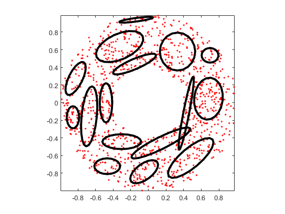
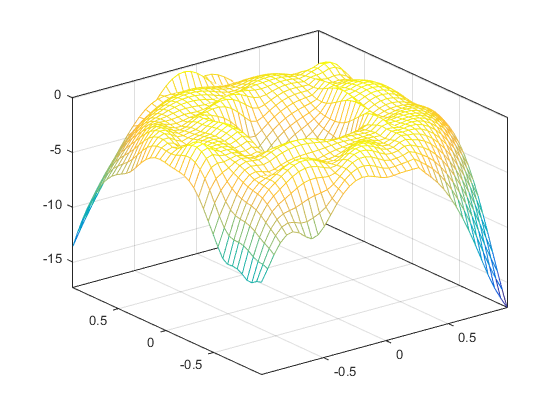
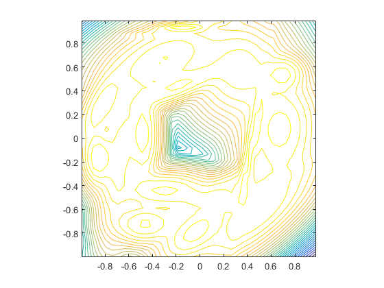

gmmGrow
Increase no. of gaussian components within a GMM
Contents
Syntax
- gmmPrm=gmmGrow(gmmPrm, targetGaussianNum)
Description
gmmPrm=gmmGrow(gmmPrm, targetGaussianNum) performs center splitting until the target no. of Gaussian components is reached.
The target number of Gaussian components should be less than or equal to the original number of Gaussian components.
Example
gmmGrowDemo
Start KMEANS to find the initial mean vectors... Warning: The EraseMode property is no longer supported and will error in a future release. Use the ANIMATEDLINE function for animating lines and points instead of EraseMode 'none'. Removing instances of EraseMode set to 'normal', 'xor', and 'background' has minimal impact. GMM iteration: 0/500, log likelihood. = -2104.813159 GMM iteration: 1/500, log likelihood. = -1877.995003 GMM iteration: 2/500, log likelihood. = -1877.995003 GMM total iteration count = 3, log likelihood. = -1877.995003 Start KMEANS to find the initial mean vectors... Warning: The EraseMode property is no longer supported and will error in a future release. Use the ANIMATEDLINE function for animating lines and points instead of EraseMode 'none'. Removing instances of EraseMode set to 'normal', 'xor', and 'background' has minimal impact. Warning: The EraseMode property is no longer supported and will error in a future release. Use the ANIMATEDLINE function for animating lines and points instead of EraseMode 'none'. Removing instances of EraseMode set to 'normal', 'xor', and 'background' has minimal impact. GMM iteration: 0/500, log likelihood. = -2013.048360 GMM iteration: 1/500, log likelihood. = -1781.201169 GMM iteration: 2/500, log likelihood. = -1763.991204 GMM iteration: 3/500, log likelihood. = -1756.267511 GMM iteration: 4/500, log likelihood. = -1753.560031 GMM iteration: 5/500, log likelihood. = -1752.308307 GMM iteration: 6/500, log likelihood. = -1751.403715 GMM iteration: 7/500, log likelihood. = -1750.609080 GMM iteration: 8/500, log likelihood. = -1749.865211 GMM iteration: 9/500, log likelihood. = -1749.145753 GMM iteration: 10/500, log likelihood. = -1748.433114 GMM iteration: 11/500, log likelihood. = -1747.714300 GMM iteration: 12/500, log likelihood. = -1746.980103 GMM iteration: 13/500, log likelihood. = -1746.225040 GMM iteration: 14/500, log likelihood. = -1745.447510 GMM iteration: 15/500, log likelihood. = -1744.649875 GMM iteration: 16/500, log likelihood. = -1743.838298 GMM iteration: 17/500, log likelihood. = -1743.022173 GMM iteration: 18/500, log likelihood. = -1742.213151 GMM iteration: 19/500, log likelihood. = -1741.423855 GMM iteration: 20/500, log likelihood. = -1740.666489 GMM iteration: 21/500, log likelihood. = -1739.951558 GMM iteration: 22/500, log likelihood. = -1739.286920 GMM iteration: 23/500, log likelihood. = -1738.677304 GMM iteration: 24/500, log likelihood. = -1738.124322 GMM iteration: 25/500, log likelihood. = -1737.626906 GMM iteration: 26/500, log likelihood. = -1737.181986 GMM iteration: 27/500, log likelihood. = -1736.785245 GMM iteration: 28/500, log likelihood. = -1736.431771 GMM iteration: 29/500, log likelihood. = -1736.116572 GMM iteration: 30/500, log likelihood. = -1735.834903 GMM iteration: 31/500, log likelihood. = -1735.582453 GMM iteration: 32/500, log likelihood. = -1735.355422 GMM iteration: 33/500, log likelihood. = -1735.150529 GMM iteration: 34/500, log likelihood. = -1734.964977 GMM iteration: 35/500, log likelihood. = -1734.796407 GMM iteration: 36/500, log likelihood. = -1734.642834 GMM iteration: 37/500, log likelihood. = -1734.502593 GMM iteration: 38/500, log likelihood. = -1734.374287 GMM iteration: 39/500, log likelihood. = -1734.256738 GMM iteration: 40/500, log likelihood. = -1734.148947 GMM iteration: 41/500, log likelihood. = -1734.050062 GMM iteration: 42/500, log likelihood. = -1733.959348 GMM iteration: 43/500, log likelihood. = -1733.876163 GMM iteration: 44/500, log likelihood. = -1733.799940 GMM iteration: 45/500, log likelihood. = -1733.730171 GMM iteration: 46/500, log likelihood. = -1733.666395 GMM iteration: 47/500, log likelihood. = -1733.608187 GMM iteration: 48/500, log likelihood. = -1733.555152 GMM iteration: 49/500, log likelihood. = -1733.506922 GMM iteration: 50/500, log likelihood. = -1733.463146 GMM iteration: 51/500, log likelihood. = -1733.423493 GMM iteration: 52/500, log likelihood. = -1733.387649 GMM iteration: 53/500, log likelihood. = -1733.355315 GMM iteration: 54/500, log likelihood. = -1733.326206 GMM iteration: 55/500, log likelihood. = -1733.300053 GMM iteration: 56/500, log likelihood. = -1733.276600 GMM iteration: 57/500, log likelihood. = -1733.255608 GMM iteration: 58/500, log likelihood. = -1733.236851 GMM iteration: 59/500, log likelihood. = -1733.220120 GMM iteration: 60/500, log likelihood. = -1733.205219 GMM iteration: 61/500, log likelihood. = -1733.191966 GMM iteration: 62/500, log likelihood. = -1733.180194 GMM iteration: 63/500, log likelihood. = -1733.169751 GMM iteration: 64/500, log likelihood. = -1733.160495 GMM iteration: 65/500, log likelihood. = -1733.152300 GMM iteration: 66/500, log likelihood. = -1733.145050 GMM iteration: 67/500, log likelihood. = -1733.138639 GMM iteration: 68/500, log likelihood. = -1733.132974 GMM iteration: 69/500, log likelihood. = -1733.127970 GMM iteration: 70/500, log likelihood. = -1733.123551 GMM iteration: 71/500, log likelihood. = -1733.119649 GMM iteration: 72/500, log likelihood. = -1733.116203 GMM iteration: 73/500, log likelihood. = -1733.113160 GMM iteration: 74/500, log likelihood. = -1733.110472 GMM iteration: 75/500, log likelihood. = -1733.108097 GMM iteration: 76/500, log likelihood. = -1733.105997 GMM iteration: 77/500, log likelihood. = -1733.104140 GMM iteration: 78/500, log likelihood. = -1733.102496 GMM iteration: 79/500, log likelihood. = -1733.101040 GMM iteration: 80/500, log likelihood. = -1733.099750 GMM iteration: 81/500, log likelihood. = -1733.098604 GMM iteration: 82/500, log likelihood. = -1733.097587 GMM iteration: 83/500, log likelihood. = -1733.096682 GMM iteration: 84/500, log likelihood. = -1733.095877 GMM iteration: 85/500, log likelihood. = -1733.095159 GMM iteration: 86/500, log likelihood. = -1733.094519 GMM iteration: 87/500, log likelihood. = -1733.093947 GMM iteration: 88/500, log likelihood. = -1733.093435 GMM iteration: 89/500, log likelihood. = -1733.092977 GMM iteration: 90/500, log likelihood. = -1733.092565 GMM iteration: 91/500, log likelihood. = -1733.092196 GMM iteration: 92/500, log likelihood. = -1733.091864 GMM iteration: 93/500, log likelihood. = -1733.091564 GMM iteration: 94/500, log likelihood. = -1733.091295 GMM iteration: 95/500, log likelihood. = -1733.091051 GMM iteration: 96/500, log likelihood. = -1733.090830 GMM iteration: 97/500, log likelihood. = -1733.090631 GMM iteration: 98/500, log likelihood. = -1733.090450 GMM iteration: 99/500, log likelihood. = -1733.090286 GMM iteration: 100/500, log likelihood. = -1733.090137 GMM iteration: 101/500, log likelihood. = -1733.090001 GMM iteration: 102/500, log likelihood. = -1733.089878 GMM iteration: 103/500, log likelihood. = -1733.089765 GMM iteration: 104/500, log likelihood. = -1733.089663 GMM iteration: 105/500, log likelihood. = -1733.089569 GMM iteration: 106/500, log likelihood. = -1733.089483 GMM iteration: 107/500, log likelihood. = -1733.089405 GMM iteration: 108/500, log likelihood. = -1733.089333 GMM iteration: 109/500, log likelihood. = -1733.089267 GMM iteration: 110/500, log likelihood. = -1733.089207 GMM iteration: 111/500, log likelihood. = -1733.089152 GMM iteration: 112/500, log likelihood. = -1733.089101 GMM iteration: 113/500, log likelihood. = -1733.089054 GMM iteration: 114/500, log likelihood. = -1733.089012 GMM iteration: 115/500, log likelihood. = -1733.088972 GMM iteration: 116/500, log likelihood. = -1733.088936 GMM iteration: 117/500, log likelihood. = -1733.088903 GMM iteration: 118/500, log likelihood. = -1733.088872 GMM iteration: 119/500, log likelihood. = -1733.088844 GMM iteration: 120/500, log likelihood. = -1733.088817 GMM iteration: 121/500, log likelihood. = -1733.088793 GMM iteration: 122/500, log likelihood. = -1733.088771 GMM iteration: 123/500, log likelihood. = -1733.088751 GMM iteration: 124/500, log likelihood. = -1733.088732 GMM iteration: 125/500, log likelihood. = -1733.088715 GMM iteration: 126/500, log likelihood. = -1733.088699 GMM iteration: 127/500, log likelihood. = -1733.088684 GMM iteration: 128/500, log likelihood. = -1733.088670 GMM iteration: 129/500, log likelihood. = -1733.088658 GMM iteration: 130/500, log likelihood. = -1733.088646 GMM iteration: 131/500, log likelihood. = -1733.088635 GMM iteration: 132/500, log likelihood. = -1733.088625 GMM iteration: 133/500, log likelihood. = -1733.088616 GMM iteration: 134/500, log likelihood. = -1733.088607 GMM iteration: 135/500, log likelihood. = -1733.088600 GMM iteration: 136/500, log likelihood. = -1733.088592 GMM iteration: 137/500, log likelihood. = -1733.088586 GMM iteration: 138/500, log likelihood. = -1733.088580 GMM iteration: 139/500, log likelihood. = -1733.088574 GMM iteration: 140/500, log likelihood. = -1733.088568 GMM iteration: 141/500, log likelihood. = -1733.088564 GMM iteration: 142/500, log likelihood. = -1733.088559 GMM iteration: 143/500, log likelihood. = -1733.088555 GMM iteration: 144/500, log likelihood. = -1733.088551 GMM iteration: 145/500, log likelihood. = -1733.088547 GMM iteration: 146/500, log likelihood. = -1733.088544 GMM iteration: 147/500, log likelihood. = -1733.088541 GMM iteration: 148/500, log likelihood. = -1733.088538 GMM iteration: 149/500, log likelihood. = -1733.088536 GMM iteration: 150/500, log likelihood. = -1733.088533 GMM iteration: 151/500, log likelihood. = -1733.088531 GMM iteration: 152/500, log likelihood. = -1733.088529 GMM iteration: 153/500, log likelihood. = -1733.088527 GMM iteration: 154/500, log likelihood. = -1733.088525 GMM iteration: 155/500, log likelihood. = -1733.088524 GMM iteration: 156/500, log likelihood. = -1733.088522 GMM iteration: 157/500, log likelihood. = -1733.088521 GMM iteration: 158/500, log likelihood. = -1733.088519 GMM iteration: 159/500, log likelihood. = -1733.088518 GMM iteration: 160/500, log likelihood. = -1733.088517 GMM iteration: 161/500, log likelihood. = -1733.088516 GMM iteration: 162/500, log likelihood. = -1733.088515 GMM iteration: 163/500, log likelihood. = -1733.088514 GMM iteration: 164/500, log likelihood. = -1733.088514 GMM iteration: 165/500, log likelihood. = -1733.088513 GMM iteration: 166/500, log likelihood. = -1733.088512 GMM iteration: 167/500, log likelihood. = -1733.088511 GMM iteration: 168/500, log likelihood. = -1733.088511 GMM iteration: 169/500, log likelihood. = -1733.088510 GMM iteration: 170/500, log likelihood. = -1733.088510 GMM iteration: 171/500, log likelihood. = -1733.088509 GMM iteration: 172/500, log likelihood. = -1733.088509 GMM iteration: 173/500, log likelihood. = -1733.088509 GMM iteration: 174/500, log likelihood. = -1733.088508 GMM iteration: 175/500, log likelihood. = -1733.088508 GMM iteration: 176/500, log likelihood. = -1733.088508 GMM iteration: 177/500, log likelihood. = -1733.088507 GMM iteration: 178/500, log likelihood. = -1733.088507 GMM iteration: 179/500, log likelihood. = -1733.088507 GMM iteration: 180/500, log likelihood. = -1733.088506 GMM iteration: 181/500, log likelihood. = -1733.088506 GMM iteration: 182/500, log likelihood. = -1733.088506 GMM iteration: 183/500, log likelihood. = -1733.088506 GMM iteration: 184/500, log likelihood. = -1733.088506 GMM iteration: 185/500, log likelihood. = -1733.088506 GMM iteration: 186/500, log likelihood. = -1733.088505 GMM iteration: 187/500, log likelihood. = -1733.088505 GMM iteration: 188/500, log likelihood. = -1733.088505 GMM iteration: 189/500, log likelihood. = -1733.088505 GMM iteration: 190/500, log likelihood. = -1733.088505 GMM iteration: 191/500, log likelihood. = -1733.088505 GMM iteration: 192/500, log likelihood. = -1733.088505 GMM iteration: 193/500, log likelihood. = -1733.088505 GMM iteration: 194/500, log likelihood. = -1733.088505 GMM iteration: 195/500, log likelihood. = -1733.088505 GMM iteration: 196/500, log likelihood. = -1733.088504 GMM iteration: 197/500, log likelihood. = -1733.088504 GMM iteration: 198/500, log likelihood. = -1733.088504 GMM iteration: 199/500, log likelihood. = -1733.088504 GMM iteration: 200/500, log likelihood. = -1733.088504 GMM iteration: 201/500, log likelihood. = -1733.088504 GMM iteration: 202/500, log likelihood. = -1733.088504 GMM iteration: 203/500, log likelihood. = -1733.088504 GMM iteration: 204/500, log likelihood. = -1733.088504 GMM iteration: 205/500, log likelihood. = -1733.088504 GMM iteration: 206/500, log likelihood. = -1733.088504 GMM iteration: 207/500, log likelihood. = -1733.088504 GMM iteration: 208/500, log likelihood. = -1733.088504 GMM iteration: 209/500, log likelihood. = -1733.088504 GMM iteration: 210/500, log likelihood. = -1733.088504 GMM iteration: 211/500, log likelihood. = -1733.088504 GMM iteration: 212/500, log likelihood. = -1733.088504 GMM iteration: 213/500, log likelihood. = -1733.088504 GMM iteration: 214/500, log likelihood. = -1733.088504 GMM iteration: 215/500, log likelihood. = -1733.088504 GMM iteration: 216/500, log likelihood. = -1733.088504 GMM iteration: 217/500, log likelihood. = -1733.088504 GMM iteration: 218/500, log likelihood. = -1733.088504 GMM iteration: 219/500, log likelihood. = -1733.088504 GMM iteration: 220/500, log likelihood. = -1733.088504 GMM iteration: 221/500, log likelihood. = -1733.088504 GMM iteration: 222/500, log likelihood. = -1733.088504 GMM iteration: 223/500, log likelihood. = -1733.088504 GMM iteration: 224/500, log likelihood. = -1733.088504 GMM iteration: 225/500, log likelihood. = -1733.088504 GMM iteration: 226/500, log likelihood. = -1733.088504 GMM iteration: 227/500, log likelihood. = -1733.088504 GMM iteration: 228/500, log likelihood. = -1733.088504 GMM iteration: 229/500, log likelihood. = -1733.088504 GMM iteration: 230/500, log likelihood. = -1733.088504 GMM iteration: 231/500, log likelihood. = -1733.088504 GMM iteration: 232/500, log likelihood. = -1733.088504 GMM iteration: 233/500, log likelihood. = -1733.088504 GMM iteration: 234/500, log likelihood. = -1733.088504 GMM iteration: 235/500, log likelihood. = -1733.088504 GMM iteration: 236/500, log likelihood. = -1733.088504 GMM iteration: 237/500, log likelihood. = -1733.088504 GMM iteration: 238/500, log likelihood. = -1733.088504 GMM iteration: 239/500, log likelihood. = -1733.088504 GMM iteration: 240/500, log likelihood. = -1733.088504 GMM iteration: 241/500, log likelihood. = -1733.088504 GMM iteration: 242/500, log likelihood. = -1733.088504 GMM iteration: 243/500, log likelihood. = -1733.088504 GMM iteration: 244/500, log likelihood. = -1733.088504 GMM iteration: 245/500, log likelihood. = -1733.088504 GMM iteration: 246/500, log likelihood. = -1733.088504 GMM iteration: 247/500, log likelihood. = -1733.088504 GMM iteration: 248/500, log likelihood. = -1733.088504 GMM iteration: 249/500, log likelihood. = -1733.088504 GMM iteration: 250/500, log likelihood. = -1733.088504 GMM iteration: 251/500, log likelihood. = -1733.088504 GMM iteration: 252/500, log likelihood. = -1733.088504 GMM iteration: 253/500, log likelihood. = -1733.088504 GMM iteration: 254/500, log likelihood. = -1733.088504 GMM iteration: 255/500, log likelihood. = -1733.088504 GMM iteration: 256/500, log likelihood. = -1733.088504 GMM iteration: 257/500, log likelihood. = -1733.088504 GMM iteration: 258/500, log likelihood. = -1733.088504 GMM iteration: 259/500, log likelihood. = -1733.088504 GMM iteration: 260/500, log likelihood. = -1733.088504 GMM iteration: 261/500, log likelihood. = -1733.088504 GMM iteration: 262/500, log likelihood. = -1733.088504 GMM iteration: 263/500, log likelihood. = -1733.088504 GMM iteration: 264/500, log likelihood. = -1733.088504 GMM iteration: 265/500, log likelihood. = -1733.088504 GMM iteration: 266/500, log likelihood. = -1733.088504 GMM iteration: 267/500, log likelihood. = -1733.088504 GMM iteration: 268/500, log likelihood. = -1733.088504 GMM iteration: 269/500, log likelihood. = -1733.088504 GMM iteration: 270/500, log likelihood. = -1733.088504 GMM iteration: 271/500, log likelihood. = -1733.088504 GMM iteration: 272/500, log likelihood. = -1733.088504 GMM iteration: 273/500, log likelihood. = -1733.088504 GMM iteration: 274/500, log likelihood. = -1733.088504 GMM iteration: 275/500, log likelihood. = -1733.088504 GMM iteration: 276/500, log likelihood. = -1733.088504 GMM iteration: 277/500, log likelihood. = -1733.088504 GMM iteration: 278/500, log likelihood. = -1733.088504 GMM iteration: 279/500, log likelihood. = -1733.088504 GMM iteration: 280/500, log likelihood. = -1733.088504 GMM iteration: 281/500, log likelihood. = -1733.088504 GMM iteration: 282/500, log likelihood. = -1733.088504 GMM iteration: 283/500, log likelihood. = -1733.088504 GMM iteration: 284/500, log likelihood. = -1733.088504 GMM iteration: 285/500, log likelihood. = -1733.088504 GMM iteration: 286/500, log likelihood. = -1733.088504 GMM iteration: 287/500, log likelihood. = -1733.088504 GMM iteration: 288/500, log likelihood. = -1733.088504 GMM iteration: 289/500, log likelihood. = -1733.088504 GMM iteration: 290/500, log likelihood. = -1733.088504 GMM iteration: 291/500, log likelihood. = -1733.088504 GMM iteration: 292/500, log likelihood. = -1733.088504 GMM iteration: 293/500, log likelihood. = -1733.088504 GMM iteration: 294/500, log likelihood. = -1733.088504 GMM iteration: 295/500, log likelihood. = -1733.088504 GMM iteration: 296/500, log likelihood. = -1733.088504 GMM iteration: 297/500, log likelihood. = -1733.088504 GMM iteration: 298/500, log likelihood. = -1733.088504 GMM iteration: 299/500, log likelihood. = -1733.088504 GMM iteration: 300/500, log likelihood. = -1733.088504 GMM iteration: 301/500, log likelihood. = -1733.088504 GMM iteration: 302/500, log likelihood. = -1733.088504 GMM iteration: 303/500, log likelihood. = -1733.088504 GMM iteration: 304/500, log likelihood. = -1733.088504 GMM iteration: 305/500, log likelihood. = -1733.088504 GMM iteration: 306/500, log likelihood. = -1733.088504 GMM iteration: 307/500, log likelihood. = -1733.088504 GMM iteration: 308/500, log likelihood. = -1733.088504 GMM iteration: 309/500, log likelihood. = -1733.088504 GMM iteration: 310/500, log likelihood. = -1733.088504 GMM iteration: 311/500, log likelihood. = -1733.088504 GMM iteration: 312/500, log likelihood. = -1733.088504 GMM iteration: 313/500, log likelihood. = -1733.088504 GMM iteration: 314/500, log likelihood. = -1733.088504 GMM iteration: 315/500, log likelihood. = -1733.088504 GMM iteration: 316/500, log likelihood. = -1733.088504 GMM iteration: 317/500, log likelihood. = -1733.088504 GMM iteration: 318/500, log likelihood. = -1733.088504 GMM iteration: 319/500, log likelihood. = -1733.088504 GMM iteration: 320/500, log likelihood. = -1733.088504 GMM iteration: 321/500, log likelihood. = -1733.088504 GMM iteration: 322/500, log likelihood. = -1733.088504 GMM iteration: 323/500, log likelihood. = -1733.088504 GMM iteration: 324/500, log likelihood. = -1733.088504 GMM iteration: 325/500, log likelihood. = -1733.088504 GMM iteration: 326/500, log likelihood. = -1733.088504 GMM iteration: 327/500, log likelihood. = -1733.088504 GMM iteration: 328/500, log likelihood. = -1733.088504 GMM total iteration count = 329, log likelihood. = -1733.088504 Start KMEANS to find the initial mean vectors... Warning: The EraseMode property is no longer supported and will error in a future release. Use the ANIMATEDLINE function for animating lines and points instead of EraseMode 'none'. Removing instances of EraseMode set to 'normal', 'xor', and 'background' has minimal impact. Warning: The EraseMode property is no longer supported and will error in a future release. Use the ANIMATEDLINE function for animating lines and points instead of EraseMode 'none'. Removing instances of EraseMode set to 'normal', 'xor', and 'background' has minimal impact. Warning: The EraseMode property is no longer supported and will error in a future release. Use the ANIMATEDLINE function for animating lines and points instead of EraseMode 'none'. Removing instances of EraseMode set to 'normal', 'xor', and 'background' has minimal impact. Warning: The EraseMode property is no longer supported and will error in a future release. Use the ANIMATEDLINE function for animating lines and points instead of EraseMode 'none'. Removing instances of EraseMode set to 'normal', 'xor', and 'background' has minimal impact. GMM iteration: 0/500, log likelihood. = -2062.034793 GMM iteration: 1/500, log likelihood. = -1784.280771 GMM iteration: 2/500, log likelihood. = -1700.653719 GMM iteration: 3/500, log likelihood. = -1588.348952 GMM iteration: 4/500, log likelihood. = -1490.814788 GMM iteration: 5/500, log likelihood. = -1439.981407 GMM iteration: 6/500, log likelihood. = -1419.434979 GMM iteration: 7/500, log likelihood. = -1410.177724 GMM iteration: 8/500, log likelihood. = -1405.026626 GMM iteration: 9/500, log likelihood. = -1401.557286 GMM iteration: 10/500, log likelihood. = -1399.007182 GMM iteration: 11/500, log likelihood. = -1397.094990 GMM iteration: 12/500, log likelihood. = -1395.663765 GMM iteration: 13/500, log likelihood. = -1394.599458 GMM iteration: 14/500, log likelihood. = -1393.813084 GMM iteration: 15/500, log likelihood. = -1393.235138 GMM iteration: 16/500, log likelihood. = -1392.812112 GMM iteration: 17/500, log likelihood. = -1392.503434 GMM iteration: 18/500, log likelihood. = -1392.270050 GMM iteration: 19/500, log likelihood. = -1392.081676 GMM iteration: 20/500, log likelihood. = -1391.925057 GMM iteration: 21/500, log likelihood. = -1391.792660 GMM iteration: 22/500, log likelihood. = -1391.679439 GMM iteration: 23/500, log likelihood. = -1391.581789 GMM iteration: 24/500, log likelihood. = -1391.497042 GMM iteration: 25/500, log likelihood. = -1391.423153 GMM iteration: 26/500, log likelihood. = -1391.358515 GMM iteration: 27/500, log likelihood. = -1391.301834 GMM iteration: 28/500, log likelihood. = -1391.252044 GMM iteration: 29/500, log likelihood. = -1391.208250 GMM iteration: 30/500, log likelihood. = -1391.169697 GMM iteration: 31/500, log likelihood. = -1391.135735 GMM iteration: 32/500, log likelihood. = -1391.105798 GMM iteration: 33/500, log likelihood. = -1391.079075 GMM iteration: 34/500, log likelihood. = -1391.054954 GMM iteration: 35/500, log likelihood. = -1391.033079 GMM iteration: 36/500, log likelihood. = -1391.013177 GMM iteration: 37/500, log likelihood. = -1390.996322 GMM iteration: 38/500, log likelihood. = -1390.983378 GMM iteration: 39/500, log likelihood. = -1390.973130 GMM iteration: 40/500, log likelihood. = -1390.964893 GMM iteration: 41/500, log likelihood. = -1390.958194 GMM iteration: 42/500, log likelihood. = -1390.952689 GMM iteration: 43/500, log likelihood. = -1390.948129 GMM iteration: 44/500, log likelihood. = -1390.944323 GMM iteration: 45/500, log likelihood. = -1390.941130 GMM iteration: 46/500, log likelihood. = -1390.938437 GMM iteration: 47/500, log likelihood. = -1390.936157 GMM iteration: 48/500, log likelihood. = -1390.934221 GMM iteration: 49/500, log likelihood. = -1390.932571 GMM iteration: 50/500, log likelihood. = -1390.931163 GMM iteration: 51/500, log likelihood. = -1390.929958 GMM iteration: 52/500, log likelihood. = -1390.928926 GMM iteration: 53/500, log likelihood. = -1390.928040 GMM iteration: 54/500, log likelihood. = -1390.927279 GMM iteration: 55/500, log likelihood. = -1390.926624 GMM iteration: 56/500, log likelihood. = -1390.926061 GMM iteration: 57/500, log likelihood. = -1390.925575 GMM iteration: 58/500, log likelihood. = -1390.925156 GMM iteration: 59/500, log likelihood. = -1390.924795 GMM iteration: 60/500, log likelihood. = -1390.924482 GMM iteration: 61/500, log likelihood. = -1390.924213 GMM iteration: 62/500, log likelihood. = -1390.923980 GMM iteration: 63/500, log likelihood. = -1390.923778 GMM iteration: 64/500, log likelihood. = -1390.923604 GMM iteration: 65/500, log likelihood. = -1390.923453 GMM iteration: 66/500, log likelihood. = -1390.923323 GMM iteration: 67/500, log likelihood. = -1390.923209 GMM iteration: 68/500, log likelihood. = -1390.923112 GMM iteration: 69/500, log likelihood. = -1390.923027 GMM iteration: 70/500, log likelihood. = -1390.922953 GMM iteration: 71/500, log likelihood. = -1390.922890 GMM iteration: 72/500, log likelihood. = -1390.922835 GMM iteration: 73/500, log likelihood. = -1390.922787 GMM iteration: 74/500, log likelihood. = -1390.922745 GMM iteration: 75/500, log likelihood. = -1390.922709 GMM iteration: 76/500, log likelihood. = -1390.922678 GMM iteration: 77/500, log likelihood. = -1390.922651 GMM iteration: 78/500, log likelihood. = -1390.922628 GMM iteration: 79/500, log likelihood. = -1390.922607 GMM iteration: 80/500, log likelihood. = -1390.922590 GMM iteration: 81/500, log likelihood. = -1390.922574 GMM iteration: 82/500, log likelihood. = -1390.922561 GMM iteration: 83/500, log likelihood. = -1390.922550 GMM iteration: 84/500, log likelihood. = -1390.922540 GMM iteration: 85/500, log likelihood. = -1390.922531 GMM iteration: 86/500, log likelihood. = -1390.922523 GMM iteration: 87/500, log likelihood. = -1390.922517 GMM iteration: 88/500, log likelihood. = -1390.922511 GMM iteration: 89/500, log likelihood. = -1390.922506 GMM iteration: 90/500, log likelihood. = -1390.922502 GMM iteration: 91/500, log likelihood. = -1390.922498 GMM iteration: 92/500, log likelihood. = -1390.922495 GMM iteration: 93/500, log likelihood. = -1390.922492 GMM iteration: 94/500, log likelihood. = -1390.922490 GMM iteration: 95/500, log likelihood. = -1390.922488 GMM iteration: 96/500, log likelihood. = -1390.922486 GMM iteration: 97/500, log likelihood. = -1390.922484 GMM iteration: 98/500, log likelihood. = -1390.922483 GMM iteration: 99/500, log likelihood. = -1390.922482 GMM iteration: 100/500, log likelihood. = -1390.922481 GMM iteration: 101/500, log likelihood. = -1390.922480 GMM iteration: 102/500, log likelihood. = -1390.922479 GMM iteration: 103/500, log likelihood. = -1390.922478 GMM iteration: 104/500, log likelihood. = -1390.922478 GMM iteration: 105/500, log likelihood. = -1390.922477 GMM iteration: 106/500, log likelihood. = -1390.922477 GMM iteration: 107/500, log likelihood. = -1390.922477 GMM iteration: 108/500, log likelihood. = -1390.922476 GMM iteration: 109/500, log likelihood. = -1390.922476 GMM iteration: 110/500, log likelihood. = -1390.922476 GMM iteration: 111/500, log likelihood. = -1390.922475 GMM iteration: 112/500, log likelihood. = -1390.922475 GMM iteration: 113/500, log likelihood. = -1390.922475 GMM iteration: 114/500, log likelihood. = -1390.922475 GMM iteration: 115/500, log likelihood. = -1390.922475 GMM iteration: 116/500, log likelihood. = -1390.922475 GMM iteration: 117/500, log likelihood. = -1390.922475 GMM iteration: 118/500, log likelihood. = -1390.922475 GMM iteration: 119/500, log likelihood. = -1390.922474 GMM iteration: 120/500, log likelihood. = -1390.922474 GMM iteration: 121/500, log likelihood. = -1390.922474 GMM iteration: 122/500, log likelihood. = -1390.922474 GMM iteration: 123/500, log likelihood. = -1390.922474 GMM iteration: 124/500, log likelihood. = -1390.922474 GMM iteration: 125/500, log likelihood. = -1390.922474 GMM iteration: 126/500, log likelihood. = -1390.922474 GMM iteration: 127/500, log likelihood. = -1390.922474 GMM iteration: 128/500, log likelihood. = -1390.922474 GMM iteration: 129/500, log likelihood. = -1390.922474 GMM iteration: 130/500, log likelihood. = -1390.922474 GMM iteration: 131/500, log likelihood. = -1390.922474 GMM iteration: 132/500, log likelihood. = -1390.922474 GMM iteration: 133/500, log likelihood. = -1390.922474 GMM iteration: 134/500, log likelihood. = -1390.922474 GMM iteration: 135/500, log likelihood. = -1390.922474 GMM iteration: 136/500, log likelihood. = -1390.922474 GMM iteration: 137/500, log likelihood. = -1390.922474 GMM iteration: 138/500, log likelihood. = -1390.922474 GMM iteration: 139/500, log likelihood. = -1390.922474 GMM iteration: 140/500, log likelihood. = -1390.922474 GMM iteration: 141/500, log likelihood. = -1390.922474 GMM iteration: 142/500, log likelihood. = -1390.922474 GMM iteration: 143/500, log likelihood. = -1390.922474 GMM iteration: 144/500, log likelihood. = -1390.922474 GMM iteration: 145/500, log likelihood. = -1390.922474 GMM iteration: 146/500, log likelihood. = -1390.922474 GMM iteration: 147/500, log likelihood. = -1390.922474 GMM iteration: 148/500, log likelihood. = -1390.922474 GMM iteration: 149/500, log likelihood. = -1390.922474 GMM iteration: 150/500, log likelihood. = -1390.922474 GMM iteration: 151/500, log likelihood. = -1390.922474 GMM iteration: 152/500, log likelihood. = -1390.922474 GMM iteration: 153/500, log likelihood. = -1390.922474 GMM iteration: 154/500, log likelihood. = -1390.922474 GMM iteration: 155/500, log likelihood. = -1390.922474 GMM iteration: 156/500, log likelihood. = -1390.922474 GMM iteration: 157/500, log likelihood. = -1390.922474 GMM iteration: 158/500, log likelihood. = -1390.922474 GMM iteration: 159/500, log likelihood. = -1390.922474 GMM iteration: 160/500, log likelihood. = -1390.922474 GMM iteration: 161/500, log likelihood. = -1390.922474 GMM iteration: 162/500, log likelihood. = -1390.922474 GMM iteration: 163/500, log likelihood. = -1390.922474 GMM iteration: 164/500, log likelihood. = -1390.922474 GMM iteration: 165/500, log likelihood. = -1390.922474 GMM iteration: 166/500, log likelihood. = -1390.922474 GMM iteration: 167/500, log likelihood. = -1390.922474 GMM iteration: 168/500, log likelihood. = -1390.922474 GMM iteration: 169/500, log likelihood. = -1390.922474 GMM iteration: 170/500, log likelihood. = -1390.922474 GMM iteration: 171/500, log likelihood. = -1390.922474 GMM iteration: 172/500, log likelihood. = -1390.922474 GMM iteration: 173/500, log likelihood. = -1390.922474 GMM iteration: 174/500, log likelihood. = -1390.922474 GMM iteration: 175/500, log likelihood. = -1390.922474 GMM iteration: 176/500, log likelihood. = -1390.922474 GMM iteration: 177/500, log likelihood. = -1390.922474 GMM iteration: 178/500, log likelihood. = -1390.922474 GMM iteration: 179/500, log likelihood. = -1390.922474 GMM iteration: 180/500, log likelihood. = -1390.922474 GMM iteration: 181/500, log likelihood. = -1390.922474 GMM iteration: 182/500, log likelihood. = -1390.922474 GMM iteration: 183/500, log likelihood. = -1390.922474 GMM iteration: 184/500, log likelihood. = -1390.922474 GMM iteration: 185/500, log likelihood. = -1390.922474 GMM iteration: 186/500, log likelihood. = -1390.922474 GMM iteration: 187/500, log likelihood. = -1390.922474 GMM iteration: 188/500, log likelihood. = -1390.922474 GMM iteration: 189/500, log likelihood. = -1390.922474 GMM iteration: 190/500, log likelihood. = -1390.922474 GMM iteration: 191/500, log likelihood. = -1390.922474 GMM total iteration count = 192, log likelihood. = -1390.922474 Start KMEANS to find the initial mean vectors... Warning: The EraseMode property is no longer supported and will error in a future release. Use the ANIMATEDLINE function for animating lines and points instead of EraseMode 'none'. Removing instances of EraseMode set to 'normal', 'xor', and 'background' has minimal impact. Warning: The EraseMode property is no longer supported and will error in a future release. Use the ANIMATEDLINE function for animating lines and points instead of EraseMode 'none'. Removing instances of EraseMode set to 'normal', 'xor', and 'background' has minimal impact. Warning: The EraseMode property is no longer supported and will error in a future release. Use the ANIMATEDLINE function for animating lines and points instead of EraseMode 'none'. Removing instances of EraseMode set to 'normal', 'xor', and 'background' has minimal impact. Warning: The EraseMode property is no longer supported and will error in a future release. Use the ANIMATEDLINE function for animating lines and points instead of EraseMode 'none'. Removing instances of EraseMode set to 'normal', 'xor', and 'background' has minimal impact. Warning: The EraseMode property is no longer supported and will error in a future release. Use the ANIMATEDLINE function for animating lines and points instead of EraseMode 'none'. Removing instances of EraseMode set to 'normal', 'xor', and 'background' has minimal impact. Warning: The EraseMode property is no longer supported and will error in a future release. Use the ANIMATEDLINE function for animating lines and points instead of EraseMode 'none'. Removing instances of EraseMode set to 'normal', 'xor', and 'background' has minimal impact. Warning: The EraseMode property is no longer supported and will error in a future release. Use the ANIMATEDLINE function for animating lines and points instead of EraseMode 'none'. Removing instances of EraseMode set to 'normal', 'xor', and 'background' has minimal impact. Warning: The EraseMode property is no longer supported and will error in a future release. Use the ANIMATEDLINE function for animating lines and points instead of EraseMode 'none'. Removing instances of EraseMode set to 'normal', 'xor', and 'background' has minimal impact. GMM iteration: 0/500, log likelihood. = -2175.358489 GMM iteration: 1/500, log likelihood. = -1804.999894 GMM iteration: 2/500, log likelihood. = -1737.975838 GMM iteration: 3/500, log likelihood. = -1637.458581 GMM iteration: 4/500, log likelihood. = -1534.267048 GMM iteration: 5/500, log likelihood. = -1459.386362 GMM iteration: 6/500, log likelihood. = -1417.182907 GMM iteration: 7/500, log likelihood. = -1396.523920 GMM iteration: 8/500, log likelihood. = -1385.605979 GMM iteration: 9/500, log likelihood. = -1378.923777 GMM iteration: 10/500, log likelihood. = -1374.406522 GMM iteration: 11/500, log likelihood. = -1371.172593 GMM iteration: 12/500, log likelihood. = -1368.785812 GMM iteration: 13/500, log likelihood. = -1366.994748 GMM iteration: 14/500, log likelihood. = -1365.632102 GMM iteration: 15/500, log likelihood. = -1364.578699 GMM iteration: 16/500, log likelihood. = -1363.749376 GMM iteration: 17/500, log likelihood. = -1363.084731 GMM iteration: 18/500, log likelihood. = -1362.542536 GMM iteration: 19/500, log likelihood. = -1362.092289 GMM iteration: 20/500, log likelihood. = -1361.712665 GMM iteration: 21/500, log likelihood. = -1361.387720 GMM iteration: 22/500, log likelihood. = -1361.105544 GMM iteration: 23/500, log likelihood. = -1360.857198 GMM iteration: 24/500, log likelihood. = -1360.635934 GMM iteration: 25/500, log likelihood. = -1360.436615 GMM iteration: 26/500, log likelihood. = -1360.255262 GMM iteration: 27/500, log likelihood. = -1360.088734 GMM iteration: 28/500, log likelihood. = -1359.934478 GMM iteration: 29/500, log likelihood. = -1359.790356 GMM iteration: 30/500, log likelihood. = -1359.654519 GMM iteration: 31/500, log likelihood. = -1359.525316 GMM iteration: 32/500, log likelihood. = -1359.401215 GMM iteration: 33/500, log likelihood. = -1359.280752 GMM iteration: 34/500, log likelihood. = -1359.162470 GMM iteration: 35/500, log likelihood. = -1359.044869 GMM iteration: 36/500, log likelihood. = -1358.926254 GMM iteration: 37/500, log likelihood. = -1358.804609 GMM iteration: 38/500, log likelihood. = -1358.677670 GMM iteration: 39/500, log likelihood. = -1358.542801 GMM iteration: 40/500, log likelihood. = -1358.396844 GMM iteration: 41/500, log likelihood. = -1358.235957 GMM iteration: 42/500, log likelihood. = -1358.055412 GMM iteration: 43/500, log likelihood. = -1357.849372 GMM iteration: 44/500, log likelihood. = -1357.610642 GMM iteration: 45/500, log likelihood. = -1357.330451 GMM iteration: 46/500, log likelihood. = -1356.998352 GMM iteration: 47/500, log likelihood. = -1356.602376 GMM iteration: 48/500, log likelihood. = -1356.129709 GMM iteration: 49/500, log likelihood. = -1355.568145 GMM iteration: 50/500, log likelihood. = -1354.908509 GMM iteration: 51/500, log likelihood. = -1354.147750 GMM iteration: 52/500, log likelihood. = -1353.291581 GMM iteration: 53/500, log likelihood. = -1352.354808 GMM iteration: 54/500, log likelihood. = -1351.357993 GMM iteration: 55/500, log likelihood. = -1350.321494 GMM iteration: 56/500, log likelihood. = -1349.260340 GMM iteration: 57/500, log likelihood. = -1348.182591 GMM iteration: 58/500, log likelihood. = -1347.089966 GMM iteration: 59/500, log likelihood. = -1345.977374 GMM iteration: 60/500, log likelihood. = -1344.830825 GMM iteration: 61/500, log likelihood. = -1343.626146 GMM iteration: 62/500, log likelihood. = -1342.332279 GMM iteration: 63/500, log likelihood. = -1340.920273 GMM iteration: 64/500, log likelihood. = -1339.376091 GMM iteration: 65/500, log likelihood. = -1337.713668 GMM iteration: 66/500, log likelihood. = -1335.983473 GMM iteration: 67/500, log likelihood. = -1334.270867 GMM iteration: 68/500, log likelihood. = -1332.760994 GMM iteration: 69/500, log likelihood. = -1331.568506 GMM iteration: 70/500, log likelihood. = -1330.681826 GMM iteration: 71/500, log likelihood. = -1330.041528 GMM iteration: 72/500, log likelihood. = -1329.572439 GMM iteration: 73/500, log likelihood. = -1329.213527 GMM iteration: 74/500, log likelihood. = -1328.924878 GMM iteration: 75/500, log likelihood. = -1328.682683 GMM iteration: 76/500, log likelihood. = -1328.472854 GMM iteration: 77/500, log likelihood. = -1328.286699 GMM iteration: 78/500, log likelihood. = -1328.118531 GMM iteration: 79/500, log likelihood. = -1327.964417 GMM iteration: 80/500, log likelihood. = -1327.821515 GMM iteration: 81/500, log likelihood. = -1327.687706 GMM iteration: 82/500, log likelihood. = -1327.561374 GMM iteration: 83/500, log likelihood. = -1327.441266 GMM iteration: 84/500, log likelihood. = -1327.326397 GMM iteration: 85/500, log likelihood. = -1327.215991 GMM iteration: 86/500, log likelihood. = -1327.109432 GMM iteration: 87/500, log likelihood. = -1327.006233 GMM iteration: 88/500, log likelihood. = -1326.906010 GMM iteration: 89/500, log likelihood. = -1326.808469 GMM iteration: 90/500, log likelihood. = -1326.713383 GMM iteration: 91/500, log likelihood. = -1326.620588 GMM iteration: 92/500, log likelihood. = -1326.529969 GMM iteration: 93/500, log likelihood. = -1326.441453 GMM iteration: 94/500, log likelihood. = -1326.354998 GMM iteration: 95/500, log likelihood. = -1326.270588 GMM iteration: 96/500, log likelihood. = -1326.188228 GMM iteration: 97/500, log likelihood. = -1326.107930 GMM iteration: 98/500, log likelihood. = -1326.029715 GMM iteration: 99/500, log likelihood. = -1325.953602 GMM iteration: 100/500, log likelihood. = -1325.879605 GMM iteration: 101/500, log likelihood. = -1325.807731 GMM iteration: 102/500, log likelihood. = -1325.737970 GMM iteration: 103/500, log likelihood. = -1325.670303 GMM iteration: 104/500, log likelihood. = -1325.604693 GMM iteration: 105/500, log likelihood. = -1325.541088 GMM iteration: 106/500, log likelihood. = -1325.479420 GMM iteration: 107/500, log likelihood. = -1325.419609 GMM iteration: 108/500, log likelihood. = -1325.361559 GMM iteration: 109/500, log likelihood. = -1325.305169 GMM iteration: 110/500, log likelihood. = -1325.250325 GMM iteration: 111/500, log likelihood. = -1325.196910 GMM iteration: 112/500, log likelihood. = -1325.144803 GMM iteration: 113/500, log likelihood. = -1325.093884 GMM iteration: 114/500, log likelihood. = -1325.044031 GMM iteration: 115/500, log likelihood. = -1324.995131 GMM iteration: 116/500, log likelihood. = -1324.947072 GMM iteration: 117/500, log likelihood. = -1324.899752 GMM iteration: 118/500, log likelihood. = -1324.853081 GMM iteration: 119/500, log likelihood. = -1324.806976 GMM iteration: 120/500, log likelihood. = -1324.761369 GMM iteration: 121/500, log likelihood. = -1324.716208 GMM iteration: 122/500, log likelihood. = -1324.671452 GMM iteration: 123/500, log likelihood. = -1324.627078 GMM iteration: 124/500, log likelihood. = -1324.583079 GMM iteration: 125/500, log likelihood. = -1324.539461 GMM iteration: 126/500, log likelihood. = -1324.496246 GMM iteration: 127/500, log likelihood. = -1324.453467 GMM iteration: 128/500, log likelihood. = -1324.411167 GMM iteration: 129/500, log likelihood. = -1324.369395 GMM iteration: 130/500, log likelihood. = -1324.328200 GMM iteration: 131/500, log likelihood. = -1324.287630 GMM iteration: 132/500, log likelihood. = -1324.247718 GMM iteration: 133/500, log likelihood. = -1324.208483 GMM iteration: 134/500, log likelihood. = -1324.169918 GMM iteration: 135/500, log likelihood. = -1324.131984 GMM iteration: 136/500, log likelihood. = -1324.094604 GMM iteration: 137/500, log likelihood. = -1324.057658 GMM iteration: 138/500, log likelihood. = -1324.020973 GMM iteration: 139/500, log likelihood. = -1323.984328 GMM iteration: 140/500, log likelihood. = -1323.947446 GMM iteration: 141/500, log likelihood. = -1323.909998 GMM iteration: 142/500, log likelihood. = -1323.871609 GMM iteration: 143/500, log likelihood. = -1323.831864 GMM iteration: 144/500, log likelihood. = -1323.790321 GMM iteration: 145/500, log likelihood. = -1323.746530 GMM iteration: 146/500, log likelihood. = -1323.700052 GMM iteration: 147/500, log likelihood. = -1323.650495 GMM iteration: 148/500, log likelihood. = -1323.597537 GMM iteration: 149/500, log likelihood. = -1323.540969 GMM iteration: 150/500, log likelihood. = -1323.480732 GMM iteration: 151/500, log likelihood. = -1323.416940 GMM iteration: 152/500, log likelihood. = -1323.349910 GMM iteration: 153/500, log likelihood. = -1323.280162 GMM iteration: 154/500, log likelihood. = -1323.208411 GMM iteration: 155/500, log likelihood. = -1323.135532 GMM iteration: 156/500, log likelihood. = -1323.062509 GMM iteration: 157/500, log likelihood. = -1322.990376 GMM iteration: 158/500, log likelihood. = -1322.920147 GMM iteration: 159/500, log likelihood. = -1322.852749 GMM iteration: 160/500, log likelihood. = -1322.788978 GMM iteration: 161/500, log likelihood. = -1322.729451 GMM iteration: 162/500, log likelihood. = -1322.674595 GMM iteration: 163/500, log likelihood. = -1322.624642 GMM iteration: 164/500, log likelihood. = -1322.579645 GMM iteration: 165/500, log likelihood. = -1322.539505 GMM iteration: 166/500, log likelihood. = -1322.504000 GMM iteration: 167/500, log likelihood. = -1322.472821 GMM iteration: 168/500, log likelihood. = -1322.445607 GMM iteration: 169/500, log likelihood. = -1322.421968 GMM iteration: 170/500, log likelihood. = -1322.401510 GMM iteration: 171/500, log likelihood. = -1322.383852 GMM iteration: 172/500, log likelihood. = -1322.368639 GMM iteration: 173/500, log likelihood. = -1322.355544 GMM iteration: 174/500, log likelihood. = -1322.344273 GMM iteration: 175/500, log likelihood. = -1322.334567 GMM iteration: 176/500, log likelihood. = -1322.326200 GMM iteration: 177/500, log likelihood. = -1322.318976 GMM iteration: 178/500, log likelihood. = -1322.312725 GMM iteration: 179/500, log likelihood. = -1322.307302 GMM iteration: 180/500, log likelihood. = -1322.302585 GMM iteration: 181/500, log likelihood. = -1322.298468 GMM iteration: 182/500, log likelihood. = -1322.294863 GMM iteration: 183/500, log likelihood. = -1322.291695 GMM iteration: 184/500, log likelihood. = -1322.288899 GMM iteration: 185/500, log likelihood. = -1322.286421 GMM iteration: 186/500, log likelihood. = -1322.284217 GMM iteration: 187/500, log likelihood. = -1322.282247 GMM iteration: 188/500, log likelihood. = -1322.280479 GMM iteration: 189/500, log likelihood. = -1322.278885 GMM iteration: 190/500, log likelihood. = -1322.277443 GMM iteration: 191/500, log likelihood. = -1322.276130 GMM iteration: 192/500, log likelihood. = -1322.274932 GMM iteration: 193/500, log likelihood. = -1322.273834 GMM iteration: 194/500, log likelihood. = -1322.272823 GMM iteration: 195/500, log likelihood. = -1322.271888 GMM iteration: 196/500, log likelihood. = -1322.271022 GMM iteration: 197/500, log likelihood. = -1322.270215 GMM iteration: 198/500, log likelihood. = -1322.269462 GMM iteration: 199/500, log likelihood. = -1322.268757 GMM iteration: 200/500, log likelihood. = -1322.268094 GMM iteration: 201/500, log likelihood. = -1322.267470 GMM iteration: 202/500, log likelihood. = -1322.266881 GMM iteration: 203/500, log likelihood. = -1322.266323 GMM iteration: 204/500, log likelihood. = -1322.265794 GMM iteration: 205/500, log likelihood. = -1322.265292 GMM iteration: 206/500, log likelihood. = -1322.264813 GMM iteration: 207/500, log likelihood. = -1322.264356 GMM iteration: 208/500, log likelihood. = -1322.263920 GMM iteration: 209/500, log likelihood. = -1322.263503 GMM iteration: 210/500, log likelihood. = -1322.263103 GMM iteration: 211/500, log likelihood. = -1322.262721 GMM iteration: 212/500, log likelihood. = -1322.262363 GMM iteration: 213/500, log likelihood. = -1322.262024 GMM iteration: 214/500, log likelihood. = -1322.261702 GMM iteration: 215/500, log likelihood. = -1322.261393 GMM iteration: 216/500, log likelihood. = -1322.261098 GMM iteration: 217/500, log likelihood. = -1322.260816 GMM iteration: 218/500, log likelihood. = -1322.260545 GMM iteration: 219/500, log likelihood. = -1322.260284 GMM iteration: 220/500, log likelihood. = -1322.260034 GMM iteration: 221/500, log likelihood. = -1322.259793 GMM iteration: 222/500, log likelihood. = -1322.259561 GMM iteration: 223/500, log likelihood. = -1322.259338 GMM iteration: 224/500, log likelihood. = -1322.259122 GMM iteration: 225/500, log likelihood. = -1322.258915 GMM iteration: 226/500, log likelihood. = -1322.258715 GMM iteration: 227/500, log likelihood. = -1322.258521 GMM iteration: 228/500, log likelihood. = -1322.258335 GMM iteration: 229/500, log likelihood. = -1322.258154 GMM iteration: 230/500, log likelihood. = -1322.257980 GMM iteration: 231/500, log likelihood. = -1322.257811 GMM iteration: 232/500, log likelihood. = -1322.257648 GMM iteration: 233/500, log likelihood. = -1322.257490 GMM iteration: 234/500, log likelihood. = -1322.257337 GMM iteration: 235/500, log likelihood. = -1322.257189 GMM iteration: 236/500, log likelihood. = -1322.257045 GMM iteration: 237/500, log likelihood. = -1322.256906 GMM iteration: 238/500, log likelihood. = -1322.256771 GMM iteration: 239/500, log likelihood. = -1322.256640 GMM iteration: 240/500, log likelihood. = -1322.256513 GMM iteration: 241/500, log likelihood. = -1322.256390 GMM iteration: 242/500, log likelihood. = -1322.256270 GMM iteration: 243/500, log likelihood. = -1322.256153 GMM iteration: 244/500, log likelihood. = -1322.256040 GMM iteration: 245/500, log likelihood. = -1322.255930 GMM iteration: 246/500, log likelihood. = -1322.255824 GMM iteration: 247/500, log likelihood. = -1322.255720 GMM iteration: 248/500, log likelihood. = -1322.255619 GMM iteration: 249/500, log likelihood. = -1322.255520 GMM iteration: 250/500, log likelihood. = -1322.255425 GMM iteration: 251/500, log likelihood. = -1322.255331 GMM iteration: 252/500, log likelihood. = -1322.255241 GMM iteration: 253/500, log likelihood. = -1322.255152 GMM iteration: 254/500, log likelihood. = -1322.255066 GMM iteration: 255/500, log likelihood. = -1322.254982 GMM iteration: 256/500, log likelihood. = -1322.254900 GMM iteration: 257/500, log likelihood. = -1322.254820 GMM iteration: 258/500, log likelihood. = -1322.254742 GMM iteration: 259/500, log likelihood. = -1322.254666 GMM iteration: 260/500, log likelihood. = -1322.254592 GMM iteration: 261/500, log likelihood. = -1322.254520 GMM iteration: 262/500, log likelihood. = -1322.254449 GMM iteration: 263/500, log likelihood. = -1322.254380 GMM iteration: 264/500, log likelihood. = -1322.254313 GMM iteration: 265/500, log likelihood. = -1322.254247 GMM iteration: 266/500, log likelihood. = -1322.254183 GMM iteration: 267/500, log likelihood. = -1322.254120 GMM iteration: 268/500, log likelihood. = -1322.254058 GMM iteration: 269/500, log likelihood. = -1322.253998 GMM iteration: 270/500, log likelihood. = -1322.253940 GMM iteration: 271/500, log likelihood. = -1322.253882 GMM iteration: 272/500, log likelihood. = -1322.253826 GMM iteration: 273/500, log likelihood. = -1322.253771 GMM iteration: 274/500, log likelihood. = -1322.253717 GMM iteration: 275/500, log likelihood. = -1322.253664 GMM iteration: 276/500, log likelihood. = -1322.253612 GMM iteration: 277/500, log likelihood. = -1322.253562 GMM iteration: 278/500, log likelihood. = -1322.253512 GMM iteration: 279/500, log likelihood. = -1322.253464 GMM iteration: 280/500, log likelihood. = -1322.253416 GMM iteration: 281/500, log likelihood. = -1322.253369 GMM iteration: 282/500, log likelihood. = -1322.253324 GMM iteration: 283/500, log likelihood. = -1322.253279 GMM iteration: 284/500, log likelihood. = -1322.253235 GMM iteration: 285/500, log likelihood. = -1322.253192 GMM iteration: 286/500, log likelihood. = -1322.253149 GMM iteration: 287/500, log likelihood. = -1322.253108 GMM iteration: 288/500, log likelihood. = -1322.253067 GMM iteration: 289/500, log likelihood. = -1322.253027 GMM iteration: 290/500, log likelihood. = -1322.252988 GMM iteration: 291/500, log likelihood. = -1322.252949 GMM iteration: 292/500, log likelihood. = -1322.252911 GMM iteration: 293/500, log likelihood. = -1322.252874 GMM iteration: 294/500, log likelihood. = -1322.252838 GMM iteration: 295/500, log likelihood. = -1322.252802 GMM iteration: 296/500, log likelihood. = -1322.252766 GMM iteration: 297/500, log likelihood. = -1322.252732 GMM iteration: 298/500, log likelihood. = -1322.252698 GMM iteration: 299/500, log likelihood. = -1322.252664 GMM iteration: 300/500, log likelihood. = -1322.252631 GMM iteration: 301/500, log likelihood. = -1322.252599 GMM iteration: 302/500, log likelihood. = -1322.252567 GMM iteration: 303/500, log likelihood. = -1322.252536 GMM iteration: 304/500, log likelihood. = -1322.252505 GMM iteration: 305/500, log likelihood. = -1322.252475 GMM iteration: 306/500, log likelihood. = -1322.252445 GMM iteration: 307/500, log likelihood. = -1322.252415 GMM iteration: 308/500, log likelihood. = -1322.252387 GMM iteration: 309/500, log likelihood. = -1322.252358 GMM iteration: 310/500, log likelihood. = -1322.252330 GMM iteration: 311/500, log likelihood. = -1322.252302 GMM iteration: 312/500, log likelihood. = -1322.252275 GMM iteration: 313/500, log likelihood. = -1322.252249 GMM iteration: 314/500, log likelihood. = -1322.252222 GMM iteration: 315/500, log likelihood. = -1322.252196 GMM iteration: 316/500, log likelihood. = -1322.252171 GMM iteration: 317/500, log likelihood. = -1322.252145 GMM iteration: 318/500, log likelihood. = -1322.252120 GMM iteration: 319/500, log likelihood. = -1322.252096 GMM iteration: 320/500, log likelihood. = -1322.252072 GMM iteration: 321/500, log likelihood. = -1322.252048 GMM iteration: 322/500, log likelihood. = -1322.252024 GMM iteration: 323/500, log likelihood. = -1322.252001 GMM iteration: 324/500, log likelihood. = -1322.251978 GMM iteration: 325/500, log likelihood. = -1322.251956 GMM iteration: 326/500, log likelihood. = -1322.251933 GMM iteration: 327/500, log likelihood. = -1322.251911 GMM iteration: 328/500, log likelihood. = -1322.251890 GMM iteration: 329/500, log likelihood. = -1322.251868 GMM iteration: 330/500, log likelihood. = -1322.251847 GMM iteration: 331/500, log likelihood. = -1322.251826 GMM iteration: 332/500, log likelihood. = -1322.251806 GMM iteration: 333/500, log likelihood. = -1322.251785 GMM iteration: 334/500, log likelihood. = -1322.251765 GMM iteration: 335/500, log likelihood. = -1322.251745 GMM iteration: 336/500, log likelihood. = -1322.251726 GMM iteration: 337/500, log likelihood. = -1322.251706 GMM iteration: 338/500, log likelihood. = -1322.251687 GMM iteration: 339/500, log likelihood. = -1322.251668 GMM iteration: 340/500, log likelihood. = -1322.251650 GMM iteration: 341/500, log likelihood. = -1322.251631 GMM iteration: 342/500, log likelihood. = -1322.251613 GMM iteration: 343/500, log likelihood. = -1322.251595 GMM iteration: 344/500, log likelihood. = -1322.251577 GMM iteration: 345/500, log likelihood. = -1322.251559 GMM iteration: 346/500, log likelihood. = -1322.251542 GMM iteration: 347/500, log likelihood. = -1322.251525 GMM iteration: 348/500, log likelihood. = -1322.251508 GMM iteration: 349/500, log likelihood. = -1322.251491 GMM iteration: 350/500, log likelihood. = -1322.251474 GMM iteration: 351/500, log likelihood. = -1322.251458 GMM iteration: 352/500, log likelihood. = -1322.251441 GMM iteration: 353/500, log likelihood. = -1322.251425 GMM iteration: 354/500, log likelihood. = -1322.251409 GMM iteration: 355/500, log likelihood. = -1322.251393 GMM iteration: 356/500, log likelihood. = -1322.251378 GMM iteration: 357/500, log likelihood. = -1322.251362 GMM iteration: 358/500, log likelihood. = -1322.251347 GMM iteration: 359/500, log likelihood. = -1322.251331 GMM iteration: 360/500, log likelihood. = -1322.251316 GMM iteration: 361/500, log likelihood. = -1322.251301 GMM iteration: 362/500, log likelihood. = -1322.251287 GMM iteration: 363/500, log likelihood. = -1322.251272 GMM iteration: 364/500, log likelihood. = -1322.251257 GMM iteration: 365/500, log likelihood. = -1322.251243 GMM iteration: 366/500, log likelihood. = -1322.251229 GMM iteration: 367/500, log likelihood. = -1322.251215 GMM iteration: 368/500, log likelihood. = -1322.251201 GMM iteration: 369/500, log likelihood. = -1322.251187 GMM iteration: 370/500, log likelihood. = -1322.251173 GMM iteration: 371/500, log likelihood. = -1322.251159 GMM iteration: 372/500, log likelihood. = -1322.251146 GMM iteration: 373/500, log likelihood. = -1322.251133 GMM iteration: 374/500, log likelihood. = -1322.251119 GMM iteration: 375/500, log likelihood. = -1322.251106 GMM iteration: 376/500, log likelihood. = -1322.251093 GMM iteration: 377/500, log likelihood. = -1322.251080 GMM iteration: 378/500, log likelihood. = -1322.251067 GMM iteration: 379/500, log likelihood. = -1322.251055 GMM iteration: 380/500, log likelihood. = -1322.251042 GMM iteration: 381/500, log likelihood. = -1322.251029 GMM iteration: 382/500, log likelihood. = -1322.251017 GMM iteration: 383/500, log likelihood. = -1322.251005 GMM iteration: 384/500, log likelihood. = -1322.250992 GMM iteration: 385/500, log likelihood. = -1322.250980 GMM iteration: 386/500, log likelihood. = -1322.250968 GMM iteration: 387/500, log likelihood. = -1322.250956 GMM iteration: 388/500, log likelihood. = -1322.250944 GMM iteration: 389/500, log likelihood. = -1322.250932 GMM iteration: 390/500, log likelihood. = -1322.250921 GMM iteration: 391/500, log likelihood. = -1322.250909 GMM iteration: 392/500, log likelihood. = -1322.250897 GMM iteration: 393/500, log likelihood. = -1322.250886 GMM iteration: 394/500, log likelihood. = -1322.250875 GMM iteration: 395/500, log likelihood. = -1322.250863 GMM iteration: 396/500, log likelihood. = -1322.250852 GMM iteration: 397/500, log likelihood. = -1322.250841 GMM iteration: 398/500, log likelihood. = -1322.250830 GMM iteration: 399/500, log likelihood. = -1322.250819 GMM iteration: 400/500, log likelihood. = -1322.250808 GMM iteration: 401/500, log likelihood. = -1322.250797 GMM iteration: 402/500, log likelihood. = -1322.250786 GMM iteration: 403/500, log likelihood. = -1322.250775 GMM iteration: 404/500, log likelihood. = -1322.250764 GMM iteration: 405/500, log likelihood. = -1322.250754 GMM iteration: 406/500, log likelihood. = -1322.250743 GMM iteration: 407/500, log likelihood. = -1322.250733 GMM iteration: 408/500, log likelihood. = -1322.250722 GMM iteration: 409/500, log likelihood. = -1322.250712 GMM iteration: 410/500, log likelihood. = -1322.250701 GMM iteration: 411/500, log likelihood. = -1322.250691 GMM iteration: 412/500, log likelihood. = -1322.250681 GMM iteration: 413/500, log likelihood. = -1322.250671 GMM iteration: 414/500, log likelihood. = -1322.250661 GMM iteration: 415/500, log likelihood. = -1322.250651 GMM iteration: 416/500, log likelihood. = -1322.250641 GMM iteration: 417/500, log likelihood. = -1322.250631 GMM iteration: 418/500, log likelihood. = -1322.250621 GMM iteration: 419/500, log likelihood. = -1322.250611 GMM iteration: 420/500, log likelihood. = -1322.250601 GMM iteration: 421/500, log likelihood. = -1322.250591 GMM iteration: 422/500, log likelihood. = -1322.250581 GMM iteration: 423/500, log likelihood. = -1322.250572 GMM iteration: 424/500, log likelihood. = -1322.250562 GMM iteration: 425/500, log likelihood. = -1322.250553 GMM iteration: 426/500, log likelihood. = -1322.250543 GMM iteration: 427/500, log likelihood. = -1322.250533 GMM iteration: 428/500, log likelihood. = -1322.250524 GMM iteration: 429/500, log likelihood. = -1322.250514 GMM iteration: 430/500, log likelihood. = -1322.250505 GMM iteration: 431/500, log likelihood. = -1322.250496 GMM iteration: 432/500, log likelihood. = -1322.250486 GMM iteration: 433/500, log likelihood. = -1322.250477 GMM iteration: 434/500, log likelihood. = -1322.250468 GMM iteration: 435/500, log likelihood. = -1322.250459 GMM iteration: 436/500, log likelihood. = -1322.250449 GMM iteration: 437/500, log likelihood. = -1322.250440 GMM iteration: 438/500, log likelihood. = -1322.250431 GMM iteration: 439/500, log likelihood. = -1322.250422 GMM iteration: 440/500, log likelihood. = -1322.250413 GMM iteration: 441/500, log likelihood. = -1322.250404 GMM iteration: 442/500, log likelihood. = -1322.250395 GMM iteration: 443/500, log likelihood. = -1322.250386 GMM iteration: 444/500, log likelihood. = -1322.250377 GMM iteration: 445/500, log likelihood. = -1322.250368 GMM iteration: 446/500, log likelihood. = -1322.250359 GMM iteration: 447/500, log likelihood. = -1322.250350 GMM iteration: 448/500, log likelihood. = -1322.250341 GMM iteration: 449/500, log likelihood. = -1322.250333 GMM iteration: 450/500, log likelihood. = -1322.250324 GMM iteration: 451/500, log likelihood. = -1322.250315 GMM iteration: 452/500, log likelihood. = -1322.250306 GMM iteration: 453/500, log likelihood. = -1322.250298 GMM iteration: 454/500, log likelihood. = -1322.250289 GMM iteration: 455/500, log likelihood. = -1322.250280 GMM iteration: 456/500, log likelihood. = -1322.250272 GMM iteration: 457/500, log likelihood. = -1322.250263 GMM iteration: 458/500, log likelihood. = -1322.250254 GMM iteration: 459/500, log likelihood. = -1322.250246 GMM iteration: 460/500, log likelihood. = -1322.250237 GMM iteration: 461/500, log likelihood. = -1322.250228 GMM iteration: 462/500, log likelihood. = -1322.250220 GMM iteration: 463/500, log likelihood. = -1322.250211 GMM iteration: 464/500, log likelihood. = -1322.250203 GMM iteration: 465/500, log likelihood. = -1322.250194 GMM iteration: 466/500, log likelihood. = -1322.250186 GMM iteration: 467/500, log likelihood. = -1322.250177 GMM iteration: 468/500, log likelihood. = -1322.250169 GMM iteration: 469/500, log likelihood. = -1322.250160 GMM iteration: 470/500, log likelihood. = -1322.250152 GMM iteration: 471/500, log likelihood. = -1322.250143 GMM iteration: 472/500, log likelihood. = -1322.250135 GMM iteration: 473/500, log likelihood. = -1322.250127 GMM iteration: 474/500, log likelihood. = -1322.250118 GMM iteration: 475/500, log likelihood. = -1322.250110 GMM iteration: 476/500, log likelihood. = -1322.250101 GMM iteration: 477/500, log likelihood. = -1322.250093 GMM iteration: 478/500, log likelihood. = -1322.250085 GMM iteration: 479/500, log likelihood. = -1322.250076 GMM iteration: 480/500, log likelihood. = -1322.250068 GMM iteration: 481/500, log likelihood. = -1322.250059 GMM iteration: 482/500, log likelihood. = -1322.250051 GMM iteration: 483/500, log likelihood. = -1322.250043 GMM iteration: 484/500, log likelihood. = -1322.250034 GMM iteration: 485/500, log likelihood. = -1322.250026 GMM iteration: 486/500, log likelihood. = -1322.250018 GMM iteration: 487/500, log likelihood. = -1322.250009 GMM iteration: 488/500, log likelihood. = -1322.250001 GMM iteration: 489/500, log likelihood. = -1322.249993 GMM iteration: 490/500, log likelihood. = -1322.249984 GMM iteration: 491/500, log likelihood. = -1322.249976 GMM iteration: 492/500, log likelihood. = -1322.249968 GMM iteration: 493/500, log likelihood. = -1322.249959 GMM iteration: 494/500, log likelihood. = -1322.249951 GMM iteration: 495/500, log likelihood. = -1322.249943 GMM iteration: 496/500, log likelihood. = -1322.249934 GMM iteration: 497/500, log likelihood. = -1322.249926 GMM iteration: 498/500, log likelihood. = -1322.249918 GMM iteration: 499/500, log likelihood. = -1322.249909 GMM total iteration count = 500, log likelihood. = -1322.249901 Start KMEANS to find the initial mean vectors... Warning: The EraseMode property is no longer supported and will error in a future release. Use the ANIMATEDLINE function for animating lines and points instead of EraseMode 'none'. Removing instances of EraseMode set to 'normal', 'xor', and 'background' has minimal impact. Warning: The EraseMode property is no longer supported and will error in a future release. Use the ANIMATEDLINE function for animating lines and points instead of EraseMode 'none'. Removing instances of EraseMode set to 'normal', 'xor', and 'background' has minimal impact. Warning: The EraseMode property is no longer supported and will error in a future release. Use the ANIMATEDLINE function for animating lines and points instead of EraseMode 'none'. Removing instances of EraseMode set to 'normal', 'xor', and 'background' has minimal impact. Warning: The EraseMode property is no longer supported and will error in a future release. Use the ANIMATEDLINE function for animating lines and points instead of EraseMode 'none'. Removing instances of EraseMode set to 'normal', 'xor', and 'background' has minimal impact. Warning: The EraseMode property is no longer supported and will error in a future release. Use the ANIMATEDLINE function for animating lines and points instead of EraseMode 'none'. Removing instances of EraseMode set to 'normal', 'xor', and 'background' has minimal impact. Warning: The EraseMode property is no longer supported and will error in a future release. Use the ANIMATEDLINE function for animating lines and points instead of EraseMode 'none'. Removing instances of EraseMode set to 'normal', 'xor', and 'background' has minimal impact. Warning: The EraseMode property is no longer supported and will error in a future release. Use the ANIMATEDLINE function for animating lines and points instead of EraseMode 'none'. Removing instances of EraseMode set to 'normal', 'xor', and 'background' has minimal impact. Warning: The EraseMode property is no longer supported and will error in a future release. Use the ANIMATEDLINE function for animating lines and points instead of EraseMode 'none'. Removing instances of EraseMode set to 'normal', 'xor', and 'background' has minimal impact. Warning: The EraseMode property is no longer supported and will error in a future release. Use the ANIMATEDLINE function for animating lines and points instead of EraseMode 'none'. Removing instances of EraseMode set to 'normal', 'xor', and 'background' has minimal impact. Warning: The EraseMode property is no longer supported and will error in a future release. Use the ANIMATEDLINE function for animating lines and points instead of EraseMode 'none'. Removing instances of EraseMode set to 'normal', 'xor', and 'background' has minimal impact. Warning: The EraseMode property is no longer supported and will error in a future release. Use the ANIMATEDLINE function for animating lines and points instead of EraseMode 'none'. Removing instances of EraseMode set to 'normal', 'xor', and 'background' has minimal impact. Warning: The EraseMode property is no longer supported and will error in a future release. Use the ANIMATEDLINE function for animating lines and points instead of EraseMode 'none'. Removing instances of EraseMode set to 'normal', 'xor', and 'background' has minimal impact. Warning: The EraseMode property is no longer supported and will error in a future release. Use the ANIMATEDLINE function for animating lines and points instead of EraseMode 'none'. Removing instances of EraseMode set to 'normal', 'xor', and 'background' has minimal impact. Warning: The EraseMode property is no longer supported and will error in a future release. Use the ANIMATEDLINE function for animating lines and points instead of EraseMode 'none'. Removing instances of EraseMode set to 'normal', 'xor', and 'background' has minimal impact. Warning: The EraseMode property is no longer supported and will error in a future release. Use the ANIMATEDLINE function for animating lines and points instead of EraseMode 'none'. Removing instances of EraseMode set to 'normal', 'xor', and 'background' has minimal impact. Warning: The EraseMode property is no longer supported and will error in a future release. Use the ANIMATEDLINE function for animating lines and points instead of EraseMode 'none'. Removing instances of EraseMode set to 'normal', 'xor', and 'background' has minimal impact. GMM iteration: 0/500, log likelihood. = -2245.421029 GMM iteration: 1/500, log likelihood. = -1814.402832 GMM iteration: 2/500, log likelihood. = -1754.931138 GMM iteration: 3/500, log likelihood. = -1665.878510 GMM iteration: 4/500, log likelihood. = -1568.053065 GMM iteration: 5/500, log likelihood. = -1487.687960 GMM iteration: 6/500, log likelihood. = -1436.050489 GMM iteration: 7/500, log likelihood. = -1406.015407 GMM iteration: 8/500, log likelihood. = -1388.770857 GMM iteration: 9/500, log likelihood. = -1379.130013 GMM iteration: 10/500, log likelihood. = -1373.645415 GMM iteration: 11/500, log likelihood. = -1370.236538 GMM iteration: 12/500, log likelihood. = -1367.864997 GMM iteration: 13/500, log likelihood. = -1366.044897 GMM iteration: 14/500, log likelihood. = -1364.548483 GMM iteration: 15/500, log likelihood. = -1363.262809 GMM iteration: 16/500, log likelihood. = -1362.113798 GMM iteration: 17/500, log likelihood. = -1361.038556 GMM iteration: 18/500, log likelihood. = -1359.980791 GMM iteration: 19/500, log likelihood. = -1358.885726 GMM iteration: 20/500, log likelihood. = -1357.691574 GMM iteration: 21/500, log likelihood. = -1356.325216 GMM iteration: 22/500, log likelihood. = -1354.702491 GMM iteration: 23/500, log likelihood. = -1352.734629 GMM iteration: 24/500, log likelihood. = -1350.338693 GMM iteration: 25/500, log likelihood. = -1347.444145 GMM iteration: 26/500, log likelihood. = -1343.998627 GMM iteration: 27/500, log likelihood. = -1340.003050 GMM iteration: 28/500, log likelihood. = -1335.588824 GMM iteration: 29/500, log likelihood. = -1331.046430 GMM iteration: 30/500, log likelihood. = -1326.665951 GMM iteration: 31/500, log likelihood. = -1322.540448 GMM iteration: 32/500, log likelihood. = -1318.668270 GMM iteration: 33/500, log likelihood. = -1315.340366 GMM iteration: 34/500, log likelihood. = -1312.571200 GMM iteration: 35/500, log likelihood. = -1310.292393 GMM iteration: 36/500, log likelihood. = -1308.312928 GMM iteration: 37/500, log likelihood. = -1306.434355 GMM iteration: 38/500, log likelihood. = -1304.509382 GMM iteration: 39/500, log likelihood. = -1302.443764 GMM iteration: 40/500, log likelihood. = -1300.198797 GMM iteration: 41/500, log likelihood. = -1297.827354 GMM iteration: 42/500, log likelihood. = -1295.385856 GMM iteration: 43/500, log likelihood. = -1293.014041 GMM iteration: 44/500, log likelihood. = -1290.864482 GMM iteration: 45/500, log likelihood. = -1289.010451 GMM iteration: 46/500, log likelihood. = -1287.431178 GMM iteration: 47/500, log likelihood. = -1286.063233 GMM iteration: 48/500, log likelihood. = -1284.851108 GMM iteration: 49/500, log likelihood. = -1283.761241 GMM iteration: 50/500, log likelihood. = -1282.773815 GMM iteration: 51/500, log likelihood. = -1281.872304 GMM iteration: 52/500, log likelihood. = -1281.038949 GMM iteration: 53/500, log likelihood. = -1280.258958 GMM iteration: 54/500, log likelihood. = -1279.520983 GMM iteration: 55/500, log likelihood. = -1278.816191 GMM iteration: 56/500, log likelihood. = -1278.137697 GMM iteration: 57/500, log likelihood. = -1277.480113 GMM iteration: 58/500, log likelihood. = -1276.839165 GMM iteration: 59/500, log likelihood. = -1276.211674 GMM iteration: 60/500, log likelihood. = -1275.595374 GMM iteration: 61/500, log likelihood. = -1274.988716 GMM iteration: 62/500, log likelihood. = -1274.390687 GMM iteration: 63/500, log likelihood. = -1273.800568 GMM iteration: 64/500, log likelihood. = -1273.217440 GMM iteration: 65/500, log likelihood. = -1272.640401 GMM iteration: 66/500, log likelihood. = -1272.068602 GMM iteration: 67/500, log likelihood. = -1271.501145 GMM iteration: 68/500, log likelihood. = -1270.937062 GMM iteration: 69/500, log likelihood. = -1270.375347 GMM iteration: 70/500, log likelihood. = -1269.815029 GMM iteration: 71/500, log likelihood. = -1269.255263 GMM iteration: 72/500, log likelihood. = -1268.695419 GMM iteration: 73/500, log likelihood. = -1268.135156 GMM iteration: 74/500, log likelihood. = -1267.574426 GMM iteration: 75/500, log likelihood. = -1267.013379 GMM iteration: 76/500, log likelihood. = -1266.452117 GMM iteration: 77/500, log likelihood. = -1265.890257 GMM iteration: 78/500, log likelihood. = -1265.326256 GMM iteration: 79/500, log likelihood. = -1264.756469 GMM iteration: 80/500, log likelihood. = -1264.173913 GMM iteration: 81/500, log likelihood. = -1263.566668 GMM iteration: 82/500, log likelihood. = -1262.916019 GMM iteration: 83/500, log likelihood. = -1262.195020 GMM iteration: 84/500, log likelihood. = -1261.370343 GMM iteration: 85/500, log likelihood. = -1260.415661 GMM iteration: 86/500, log likelihood. = -1259.345880 GMM iteration: 87/500, log likelihood. = -1258.277874 GMM iteration: 88/500, log likelihood. = -1257.476573 GMM iteration: 89/500, log likelihood. = -1256.794686 GMM iteration: 90/500, log likelihood. = -1256.192045 GMM iteration: 91/500, log likelihood. = -1255.653776 GMM iteration: 92/500, log likelihood. = -1255.169581 GMM iteration: 93/500, log likelihood. = -1254.730592 GMM iteration: 94/500, log likelihood. = -1254.328961 GMM iteration: 95/500, log likelihood. = -1253.957912 GMM iteration: 96/500, log likelihood. = -1253.611744 GMM iteration: 97/500, log likelihood. = -1253.285778 GMM iteration: 98/500, log likelihood. = -1252.976248 GMM iteration: 99/500, log likelihood. = -1252.680163 GMM iteration: 100/500, log likelihood. = -1252.395153 GMM iteration: 101/500, log likelihood. = -1252.119283 GMM iteration: 102/500, log likelihood. = -1251.850849 GMM iteration: 103/500, log likelihood. = -1251.588152 GMM iteration: 104/500, log likelihood. = -1251.329232 GMM iteration: 105/500, log likelihood. = -1251.071560 GMM iteration: 106/500, log likelihood. = -1250.811656 GMM iteration: 107/500, log likelihood. = -1250.544599 GMM iteration: 108/500, log likelihood. = -1250.263386 GMM iteration: 109/500, log likelihood. = -1249.969880 GMM iteration: 110/500, log likelihood. = -1249.684750 GMM iteration: 111/500, log likelihood. = -1249.395758 GMM iteration: 112/500, log likelihood. = -1249.097931 GMM iteration: 113/500, log likelihood. = -1248.786596 GMM iteration: 114/500, log likelihood. = -1248.456561 GMM iteration: 115/500, log likelihood. = -1248.101800 GMM iteration: 116/500, log likelihood. = -1247.715190 GMM iteration: 117/500, log likelihood. = -1247.288347 GMM iteration: 118/500, log likelihood. = -1246.811818 GMM iteration: 119/500, log likelihood. = -1246.276193 GMM iteration: 120/500, log likelihood. = -1245.674937 GMM iteration: 121/500, log likelihood. = -1245.009582 GMM iteration: 122/500, log likelihood. = -1244.296098 GMM iteration: 123/500, log likelihood. = -1243.567842 GMM iteration: 124/500, log likelihood. = -1242.869157 GMM iteration: 125/500, log likelihood. = -1242.240102 GMM iteration: 126/500, log likelihood. = -1241.702396 GMM iteration: 127/500, log likelihood. = -1241.256345 GMM iteration: 128/500, log likelihood. = -1240.888044 GMM iteration: 129/500, log likelihood. = -1240.579054 GMM iteration: 130/500, log likelihood. = -1240.312774 GMM iteration: 131/500, log likelihood. = -1240.076661 GMM iteration: 132/500, log likelihood. = -1239.862042 GMM iteration: 133/500, log likelihood. = -1239.663121 GMM iteration: 134/500, log likelihood. = -1239.476027 GMM iteration: 135/500, log likelihood. = -1239.298111 GMM iteration: 136/500, log likelihood. = -1239.127498 GMM iteration: 137/500, log likelihood. = -1238.962807 GMM iteration: 138/500, log likelihood. = -1238.802996 GMM iteration: 139/500, log likelihood. = -1238.647264 GMM iteration: 140/500, log likelihood. = -1238.494998 GMM iteration: 141/500, log likelihood. = -1238.345723 GMM iteration: 142/500, log likelihood. = -1238.198891 GMM iteration: 143/500, log likelihood. = -1238.054142 GMM iteration: 144/500, log likelihood. = -1237.911358 GMM iteration: 145/500, log likelihood. = -1237.770570 GMM iteration: 146/500, log likelihood. = -1237.631910 GMM iteration: 147/500, log likelihood. = -1237.495575 GMM iteration: 148/500, log likelihood. = -1237.361787 GMM iteration: 149/500, log likelihood. = -1237.230760 GMM iteration: 150/500, log likelihood. = -1237.102668 GMM iteration: 151/500, log likelihood. = -1236.977622 GMM iteration: 152/500, log likelihood. = -1236.855653 GMM iteration: 153/500, log likelihood. = -1236.736710 GMM iteration: 154/500, log likelihood. = -1236.620665 GMM iteration: 155/500, log likelihood. = -1236.507317 GMM iteration: 156/500, log likelihood. = -1236.396413 GMM iteration: 157/500, log likelihood. = -1236.287660 GMM iteration: 158/500, log likelihood. = -1236.180735 GMM iteration: 159/500, log likelihood. = -1236.075300 GMM iteration: 160/500, log likelihood. = -1235.970988 GMM iteration: 161/500, log likelihood. = -1235.867404 GMM iteration: 162/500, log likelihood. = -1235.764168 GMM iteration: 163/500, log likelihood. = -1235.660907 GMM iteration: 164/500, log likelihood. = -1235.557263 GMM iteration: 165/500, log likelihood. = -1235.452886 GMM iteration: 166/500, log likelihood. = -1235.347448 GMM iteration: 167/500, log likelihood. = -1235.240637 GMM iteration: 168/500, log likelihood. = -1235.132171 GMM iteration: 169/500, log likelihood. = -1235.021799 GMM iteration: 170/500, log likelihood. = -1234.909312 GMM iteration: 171/500, log likelihood. = -1234.794550 GMM iteration: 172/500, log likelihood. = -1234.677417 GMM iteration: 173/500, log likelihood. = -1234.557887 GMM iteration: 174/500, log likelihood. = -1234.436018 GMM iteration: 175/500, log likelihood. = -1234.311965 GMM iteration: 176/500, log likelihood. = -1234.185990 GMM iteration: 177/500, log likelihood. = -1234.058471 GMM iteration: 178/500, log likelihood. = -1233.929905 GMM iteration: 179/500, log likelihood. = -1233.800909 GMM iteration: 180/500, log likelihood. = -1233.672210 GMM iteration: 181/500, log likelihood. = -1233.544629 GMM iteration: 182/500, log likelihood. = -1233.419051 GMM iteration: 183/500, log likelihood. = -1233.296385 GMM iteration: 184/500, log likelihood. = -1233.177522 GMM iteration: 185/500, log likelihood. = -1233.063283 GMM iteration: 186/500, log likelihood. = -1232.954368 GMM iteration: 187/500, log likelihood. = -1232.851323 GMM iteration: 188/500, log likelihood. = -1232.754507 GMM iteration: 189/500, log likelihood. = -1232.664086 GMM iteration: 190/500, log likelihood. = -1232.580039 GMM iteration: 191/500, log likelihood. = -1232.502184 GMM iteration: 192/500, log likelihood. = -1232.430208 GMM iteration: 193/500, log likelihood. = -1232.363704 GMM iteration: 194/500, log likelihood. = -1232.302209 GMM iteration: 195/500, log likelihood. = -1232.245238 GMM iteration: 196/500, log likelihood. = -1232.192308 GMM iteration: 197/500, log likelihood. = -1232.142954 GMM iteration: 198/500, log likelihood. = -1232.096746 GMM iteration: 199/500, log likelihood. = -1232.053296 GMM iteration: 200/500, log likelihood. = -1232.012252 GMM iteration: 201/500, log likelihood. = -1231.973306 GMM iteration: 202/500, log likelihood. = -1231.936189 GMM iteration: 203/500, log likelihood. = -1231.900663 GMM iteration: 204/500, log likelihood. = -1231.866523 GMM iteration: 205/500, log likelihood. = -1231.833588 GMM iteration: 206/500, log likelihood. = -1231.801701 GMM iteration: 207/500, log likelihood. = -1231.770723 GMM iteration: 208/500, log likelihood. = -1231.740531 GMM iteration: 209/500, log likelihood. = -1231.711016 GMM iteration: 210/500, log likelihood. = -1231.682079 GMM iteration: 211/500, log likelihood. = -1231.653631 GMM iteration: 212/500, log likelihood. = -1231.625591 GMM iteration: 213/500, log likelihood. = -1231.597884 GMM iteration: 214/500, log likelihood. = -1231.570441 GMM iteration: 215/500, log likelihood. = -1231.543198 GMM iteration: 216/500, log likelihood. = -1231.516094 GMM iteration: 217/500, log likelihood. = -1231.489071 GMM iteration: 218/500, log likelihood. = -1231.462075 GMM iteration: 219/500, log likelihood. = -1231.435054 GMM iteration: 220/500, log likelihood. = -1231.407957 GMM iteration: 221/500, log likelihood. = -1231.380734 GMM iteration: 222/500, log likelihood. = -1231.353340 GMM iteration: 223/500, log likelihood. = -1231.325725 GMM iteration: 224/500, log likelihood. = -1231.297845 GMM iteration: 225/500, log likelihood. = -1231.269653 GMM iteration: 226/500, log likelihood. = -1231.241105 GMM iteration: 227/500, log likelihood. = -1231.212154 GMM iteration: 228/500, log likelihood. = -1231.182755 GMM iteration: 229/500, log likelihood. = -1231.152861 GMM iteration: 230/500, log likelihood. = -1231.122427 GMM iteration: 231/500, log likelihood. = -1231.091404 GMM iteration: 232/500, log likelihood. = -1231.059744 GMM iteration: 233/500, log likelihood. = -1231.027396 GMM iteration: 234/500, log likelihood. = -1230.994308 GMM iteration: 235/500, log likelihood. = -1230.960426 GMM iteration: 236/500, log likelihood. = -1230.925690 GMM iteration: 237/500, log likelihood. = -1230.890038 GMM iteration: 238/500, log likelihood. = -1230.853404 GMM iteration: 239/500, log likelihood. = -1230.815713 GMM iteration: 240/500, log likelihood. = -1230.776884 GMM iteration: 241/500, log likelihood. = -1230.736823 GMM iteration: 242/500, log likelihood. = -1230.695426 GMM iteration: 243/500, log likelihood. = -1230.652573 GMM iteration: 244/500, log likelihood. = -1230.608123 GMM iteration: 245/500, log likelihood. = -1230.561916 GMM iteration: 246/500, log likelihood. = -1230.513765 GMM iteration: 247/500, log likelihood. = -1230.463452 GMM iteration: 248/500, log likelihood. = -1230.410730 GMM iteration: 249/500, log likelihood. = -1230.355318 GMM iteration: 250/500, log likelihood. = -1230.296908 GMM iteration: 251/500, log likelihood. = -1230.235174 GMM iteration: 252/500, log likelihood. = -1230.169792 GMM iteration: 253/500, log likelihood. = -1230.100471 GMM iteration: 254/500, log likelihood. = -1230.027010 GMM iteration: 255/500, log likelihood. = -1229.949356 GMM iteration: 256/500, log likelihood. = -1229.868094 GMM iteration: 257/500, log likelihood. = -1229.783557 GMM iteration: 258/500, log likelihood. = -1229.696043 GMM iteration: 259/500, log likelihood. = -1229.606472 GMM iteration: 260/500, log likelihood. = -1229.516245 GMM iteration: 261/500, log likelihood. = -1229.427082 GMM iteration: 262/500, log likelihood. = -1229.340790 GMM iteration: 263/500, log likelihood. = -1229.259011 GMM iteration: 264/500, log likelihood. = -1229.182583 GMM iteration: 265/500, log likelihood. = -1229.111589 GMM iteration: 266/500, log likelihood. = -1229.045735 GMM iteration: 267/500, log likelihood. = -1228.984400 GMM iteration: 268/500, log likelihood. = -1228.926755 GMM iteration: 269/500, log likelihood. = -1228.871849 GMM iteration: 270/500, log likelihood. = -1228.818649 GMM iteration: 271/500, log likelihood. = -1228.766044 GMM iteration: 272/500, log likelihood. = -1228.712813 GMM iteration: 273/500, log likelihood. = -1228.657559 GMM iteration: 274/500, log likelihood. = -1228.598611 GMM iteration: 275/500, log likelihood. = -1228.533895 GMM iteration: 276/500, log likelihood. = -1228.460761 GMM iteration: 277/500, log likelihood. = -1228.375802 GMM iteration: 278/500, log likelihood. = -1228.274704 GMM iteration: 279/500, log likelihood. = -1228.152279 GMM iteration: 280/500, log likelihood. = -1228.002906 GMM iteration: 281/500, log likelihood. = -1227.821551 GMM iteration: 282/500, log likelihood. = -1227.605157 GMM iteration: 283/500, log likelihood. = -1227.353710 GMM iteration: 284/500, log likelihood. = -1227.070764 GMM iteration: 285/500, log likelihood. = -1226.764865 GMM iteration: 286/500, log likelihood. = -1226.452373 GMM iteration: 287/500, log likelihood. = -1226.156392 GMM iteration: 288/500, log likelihood. = -1225.899419 GMM iteration: 289/500, log likelihood. = -1225.689567 GMM iteration: 290/500, log likelihood. = -1225.524767 GMM iteration: 291/500, log likelihood. = -1225.404091 GMM iteration: 292/500, log likelihood. = -1225.324101 GMM iteration: 293/500, log likelihood. = -1225.275848 GMM iteration: 294/500, log likelihood. = -1225.248289 GMM iteration: 295/500, log likelihood. = -1225.232601 GMM iteration: 296/500, log likelihood. = -1225.223312 GMM iteration: 297/500, log likelihood. = -1225.217441 GMM iteration: 298/500, log likelihood. = -1225.213451 GMM iteration: 299/500, log likelihood. = -1225.210550 GMM iteration: 300/500, log likelihood. = -1225.208323 GMM iteration: 301/500, log likelihood. = -1225.206540 GMM iteration: 302/500, log likelihood. = -1225.205066 GMM iteration: 303/500, log likelihood. = -1225.203821 GMM iteration: 304/500, log likelihood. = -1225.202750 GMM iteration: 305/500, log likelihood. = -1225.201818 GMM iteration: 306/500, log likelihood. = -1225.200997 GMM iteration: 307/500, log likelihood. = -1225.200268 GMM iteration: 308/500, log likelihood. = -1225.199617 GMM iteration: 309/500, log likelihood. = -1225.199033 GMM iteration: 310/500, log likelihood. = -1225.198506 GMM iteration: 311/500, log likelihood. = -1225.198028 GMM iteration: 312/500, log likelihood. = -1225.197593 GMM iteration: 313/500, log likelihood. = -1225.197197 GMM iteration: 314/500, log likelihood. = -1225.196835 GMM iteration: 315/500, log likelihood. = -1225.196503 GMM iteration: 316/500, log likelihood. = -1225.196198 GMM iteration: 317/500, log likelihood. = -1225.195917 GMM iteration: 318/500, log likelihood. = -1225.195658 GMM iteration: 319/500, log likelihood. = -1225.195419 GMM iteration: 320/500, log likelihood. = -1225.195198 GMM iteration: 321/500, log likelihood. = -1225.194993 GMM iteration: 322/500, log likelihood. = -1225.194803 GMM iteration: 323/500, log likelihood. = -1225.194626 GMM iteration: 324/500, log likelihood. = -1225.194461 GMM iteration: 325/500, log likelihood. = -1225.194308 GMM iteration: 326/500, log likelihood. = -1225.194165 GMM iteration: 327/500, log likelihood. = -1225.194032 GMM iteration: 328/500, log likelihood. = -1225.193907 GMM iteration: 329/500, log likelihood. = -1225.193791 GMM iteration: 330/500, log likelihood. = -1225.193681 GMM iteration: 331/500, log likelihood. = -1225.193579 GMM iteration: 332/500, log likelihood. = -1225.193483 GMM iteration: 333/500, log likelihood. = -1225.193393 GMM iteration: 334/500, log likelihood. = -1225.193308 GMM iteration: 335/500, log likelihood. = -1225.193228 GMM iteration: 336/500, log likelihood. = -1225.193153 GMM iteration: 337/500, log likelihood. = -1225.193082 GMM iteration: 338/500, log likelihood. = -1225.193016 GMM iteration: 339/500, log likelihood. = -1225.192953 GMM iteration: 340/500, log likelihood. = -1225.192894 GMM iteration: 341/500, log likelihood. = -1225.192838 GMM iteration: 342/500, log likelihood. = -1225.192785 GMM iteration: 343/500, log likelihood. = -1225.192735 GMM iteration: 344/500, log likelihood. = -1225.192687 GMM iteration: 345/500, log likelihood. = -1225.192642 GMM iteration: 346/500, log likelihood. = -1225.192600 GMM iteration: 347/500, log likelihood. = -1225.192560 GMM iteration: 348/500, log likelihood. = -1225.192521 GMM iteration: 349/500, log likelihood. = -1225.192485 GMM iteration: 350/500, log likelihood. = -1225.192451 GMM iteration: 351/500, log likelihood. = -1225.192418 GMM iteration: 352/500, log likelihood. = -1225.192387 GMM iteration: 353/500, log likelihood. = -1225.192358 GMM iteration: 354/500, log likelihood. = -1225.192330 GMM iteration: 355/500, log likelihood. = -1225.192303 GMM iteration: 356/500, log likelihood. = -1225.192278 GMM iteration: 357/500, log likelihood. = -1225.192254 GMM iteration: 358/500, log likelihood. = -1225.192231 GMM iteration: 359/500, log likelihood. = -1225.192209 GMM iteration: 360/500, log likelihood. = -1225.192188 GMM iteration: 361/500, log likelihood. = -1225.192169 GMM iteration: 362/500, log likelihood. = -1225.192150 GMM iteration: 363/500, log likelihood. = -1225.192132 GMM iteration: 364/500, log likelihood. = -1225.192115 GMM iteration: 365/500, log likelihood. = -1225.192098 GMM iteration: 366/500, log likelihood. = -1225.192083 GMM iteration: 367/500, log likelihood. = -1225.192068 GMM iteration: 368/500, log likelihood. = -1225.192054 GMM iteration: 369/500, log likelihood. = -1225.192040 GMM iteration: 370/500, log likelihood. = -1225.192027 GMM iteration: 371/500, log likelihood. = -1225.192015 GMM iteration: 372/500, log likelihood. = -1225.192003 GMM iteration: 373/500, log likelihood. = -1225.191992 GMM iteration: 374/500, log likelihood. = -1225.191981 GMM iteration: 375/500, log likelihood. = -1225.191971 GMM iteration: 376/500, log likelihood. = -1225.191961 GMM iteration: 377/500, log likelihood. = -1225.191951 GMM iteration: 378/500, log likelihood. = -1225.191942 GMM iteration: 379/500, log likelihood. = -1225.191934 GMM iteration: 380/500, log likelihood. = -1225.191926 GMM iteration: 381/500, log likelihood. = -1225.191918 GMM iteration: 382/500, log likelihood. = -1225.191910 GMM iteration: 383/500, log likelihood. = -1225.191903 GMM iteration: 384/500, log likelihood. = -1225.191896 GMM iteration: 385/500, log likelihood. = -1225.191890 GMM iteration: 386/500, log likelihood. = -1225.191883 GMM iteration: 387/500, log likelihood. = -1225.191877 GMM iteration: 388/500, log likelihood. = -1225.191871 GMM iteration: 389/500, log likelihood. = -1225.191866 GMM iteration: 390/500, log likelihood. = -1225.191861 GMM iteration: 391/500, log likelihood. = -1225.191855 GMM iteration: 392/500, log likelihood. = -1225.191851 GMM iteration: 393/500, log likelihood. = -1225.191846 GMM iteration: 394/500, log likelihood. = -1225.191841 GMM iteration: 395/500, log likelihood. = -1225.191837 GMM iteration: 396/500, log likelihood. = -1225.191833 GMM iteration: 397/500, log likelihood. = -1225.191829 GMM iteration: 398/500, log likelihood. = -1225.191825 GMM iteration: 399/500, log likelihood. = -1225.191822 GMM iteration: 400/500, log likelihood. = -1225.191818 GMM iteration: 401/500, log likelihood. = -1225.191815 GMM iteration: 402/500, log likelihood. = -1225.191812 GMM iteration: 403/500, log likelihood. = -1225.191809 GMM iteration: 404/500, log likelihood. = -1225.191806 GMM iteration: 405/500, log likelihood. = -1225.191803 GMM iteration: 406/500, log likelihood. = -1225.191800 GMM iteration: 407/500, log likelihood. = -1225.191798 GMM iteration: 408/500, log likelihood. = -1225.191795 GMM iteration: 409/500, log likelihood. = -1225.191793 GMM iteration: 410/500, log likelihood. = -1225.191791 GMM iteration: 411/500, log likelihood. = -1225.191788 GMM iteration: 412/500, log likelihood. = -1225.191786 GMM iteration: 413/500, log likelihood. = -1225.191784 GMM iteration: 414/500, log likelihood. = -1225.191782 GMM iteration: 415/500, log likelihood. = -1225.191781 GMM iteration: 416/500, log likelihood. = -1225.191779 GMM iteration: 417/500, log likelihood. = -1225.191777 GMM iteration: 418/500, log likelihood. = -1225.191776 GMM iteration: 419/500, log likelihood. = -1225.191774 GMM iteration: 420/500, log likelihood. = -1225.191772 GMM iteration: 421/500, log likelihood. = -1225.191771 GMM iteration: 422/500, log likelihood. = -1225.191770 GMM iteration: 423/500, log likelihood. = -1225.191768 GMM iteration: 424/500, log likelihood. = -1225.191767 GMM iteration: 425/500, log likelihood. = -1225.191766 GMM iteration: 426/500, log likelihood. = -1225.191765 GMM iteration: 427/500, log likelihood. = -1225.191764 GMM iteration: 428/500, log likelihood. = -1225.191762 GMM iteration: 429/500, log likelihood. = -1225.191761 GMM iteration: 430/500, log likelihood. = -1225.191760 GMM iteration: 431/500, log likelihood. = -1225.191759 GMM iteration: 432/500, log likelihood. = -1225.191759 GMM iteration: 433/500, log likelihood. = -1225.191758 GMM iteration: 434/500, log likelihood. = -1225.191757 GMM iteration: 435/500, log likelihood. = -1225.191756 GMM iteration: 436/500, log likelihood. = -1225.191755 GMM iteration: 437/500, log likelihood. = -1225.191754 GMM iteration: 438/500, log likelihood. = -1225.191754 GMM iteration: 439/500, log likelihood. = -1225.191753 GMM iteration: 440/500, log likelihood. = -1225.191752 GMM iteration: 441/500, log likelihood. = -1225.191752 GMM iteration: 442/500, log likelihood. = -1225.191751 GMM iteration: 443/500, log likelihood. = -1225.191751 GMM iteration: 444/500, log likelihood. = -1225.191750 GMM iteration: 445/500, log likelihood. = -1225.191750 GMM iteration: 446/500, log likelihood. = -1225.191749 GMM iteration: 447/500, log likelihood. = -1225.191748 GMM iteration: 448/500, log likelihood. = -1225.191748 GMM iteration: 449/500, log likelihood. = -1225.191748 GMM iteration: 450/500, log likelihood. = -1225.191747 GMM iteration: 451/500, log likelihood. = -1225.191747 GMM iteration: 452/500, log likelihood. = -1225.191746 GMM iteration: 453/500, log likelihood. = -1225.191746 GMM iteration: 454/500, log likelihood. = -1225.191746 GMM iteration: 455/500, log likelihood. = -1225.191745 GMM iteration: 456/500, log likelihood. = -1225.191745 GMM iteration: 457/500, log likelihood. = -1225.191744 GMM iteration: 458/500, log likelihood. = -1225.191744 GMM iteration: 459/500, log likelihood. = -1225.191744 GMM iteration: 460/500, log likelihood. = -1225.191744 GMM iteration: 461/500, log likelihood. = -1225.191743 GMM iteration: 462/500, log likelihood. = -1225.191743 GMM iteration: 463/500, log likelihood. = -1225.191743 GMM iteration: 464/500, log likelihood. = -1225.191743 GMM iteration: 465/500, log likelihood. = -1225.191742 GMM iteration: 466/500, log likelihood. = -1225.191742 GMM iteration: 467/500, log likelihood. = -1225.191742 GMM iteration: 468/500, log likelihood. = -1225.191742 GMM iteration: 469/500, log likelihood. = -1225.191741 GMM iteration: 470/500, log likelihood. = -1225.191741 GMM iteration: 471/500, log likelihood. = -1225.191741 GMM iteration: 472/500, log likelihood. = -1225.191741 GMM iteration: 473/500, log likelihood. = -1225.191741 GMM iteration: 474/500, log likelihood. = -1225.191741 GMM iteration: 475/500, log likelihood. = -1225.191740 GMM iteration: 476/500, log likelihood. = -1225.191740 GMM iteration: 477/500, log likelihood. = -1225.191740 GMM iteration: 478/500, log likelihood. = -1225.191740 GMM iteration: 479/500, log likelihood. = -1225.191740 GMM iteration: 480/500, log likelihood. = -1225.191740 GMM iteration: 481/500, log likelihood. = -1225.191740 GMM iteration: 482/500, log likelihood. = -1225.191739 GMM iteration: 483/500, log likelihood. = -1225.191739 GMM iteration: 484/500, log likelihood. = -1225.191739 GMM iteration: 485/500, log likelihood. = -1225.191739 GMM iteration: 486/500, log likelihood. = -1225.191739 GMM iteration: 487/500, log likelihood. = -1225.191739 GMM iteration: 488/500, log likelihood. = -1225.191739 GMM iteration: 489/500, log likelihood. = -1225.191739 GMM iteration: 490/500, log likelihood. = -1225.191739 GMM iteration: 491/500, log likelihood. = -1225.191739 GMM iteration: 492/500, log likelihood. = -1225.191738 GMM iteration: 493/500, log likelihood. = -1225.191738 GMM iteration: 494/500, log likelihood. = -1225.191738 GMM iteration: 495/500, log likelihood. = -1225.191738 GMM iteration: 496/500, log likelihood. = -1225.191738 GMM iteration: 497/500, log likelihood. = -1225.191738 GMM iteration: 498/500, log likelihood. = -1225.191738 GMM iteration: 499/500, log likelihood. = -1225.191738 GMM total iteration count = 500, log likelihood. = -1225.191738  